11email: skhalafinejad@lsw.uni-heidelberg.de 22institutetext: Max-Planck-Institut für Astronomie, Königstuhl 17, 69117 Heidelberg, Germany 33institutetext: Department of Physics, New York University Abu Dhabi, PO Box 129188, Abu Dhabi, UAE 44institutetext: Center for Astro, Particle and Planetary Physics (CAP3), New York University Abu Dhabi, PO Box 129188, Abu Dhabi, UAE 55institutetext: Leibniz-Institut für Astrophysik Potsdam, An der Sternwarte 16, 14482 Potsdam, Germany 66institutetext: Institut für Astrophysik, Georg-August-Universität Göttingen, Friedrich-Hund-Platz 1, 37077 Göttingen, Germany 77institutetext: Centro de Astrobiología (CSIC-INTA), ESAC, Camino bajo del castillo s/n, 28692 Villanueva de la Cañada, Madrid, Spain 88institutetext: Department of Physics, Bu-Ali Sina University, Hamedan 65178, Iran 99institutetext: Thüringer Landessternwarte Tautenburg, Sternwarte 5, 07778 Tautenburg, Germany 1010institutetext: Hamburger Sternwarte, Universität Hamburg, Gojenbergsweg 112, 21029 Hamburg, Germany 1111institutetext: Instituto de Astrofísica de Andalucía (IAA-CSIC), Glorieta de la Astronomía s/n, 18008 Granada, Spain 1212institutetext: Centro Astronómico Hispano-Alemán, Observatorio de Calar Alto, 04550 Gérgal, Almería, Spain 1313institutetext: Sterrewacht Leiden, Universiteit Leiden, Postbus 9513, 2300 RA, Leiden, The Netherlands 1414institutetext: Stellar Astrophysics Centre, Aarhus Universitet, Ny Munkegade 120, 8000 Aarhus C, Denmark 1515institutetext: Astronomical Observatory, Institute of Theoretical Physics and Astronomy, Vilniaus universitetas, Sauletekio av. 3, 10257, Vilnius, Lithuania 1616institutetext: Institut für Weltraumforschung, Österreichische Akademie der Wissenschaften, Schmiedlstrasse 6, A-8042 Graz, Austria 1717institutetext: Institut für Astronomie, Universität Wien, Türkenschanzstrasse 17, 1180 Wien, Austria 1818institutetext: Observatoire de Genève, Université de Genève, Chemin des maillettes 51, 1290 Sauverny, Switzerland 1919institutetext: European Space Research and Technology Centre, European Space Agency, Keplerlaan 1, 2201, AZ Noordwijk, The Netherlands 2020institutetext: Facultad de Ciencias Físicas, Departamento de Física de la Tierra y Astrof ísica & IPARCOS-UCM (Instituto de Física de Partículas y del Cosmos de laUCM), Universidad Complutense de Madrid, 28040 Madrid, Spain 2121institutetext: Instituto de Astrofísica de Canarias, c/ Vía Láctea s/n, 38205 La Laguna, Tenerife, Spain 2222institutetext: Universidad de La Laguna, Departamento de Astrofísica, E-38206 La Laguna, Tenerife, Spain 2323institutetext: Institut de Ciéncies de l’Espai (CSIC-IEEC), Campus UAB, c/de Can Magrans s/n, 08193 Bellaterra, Barcelona, Spain 2424institutetext: Institut d’Estudis Espacials de Catalunya (IEEC), 08034 Barcelona, Spain 2525institutetext: Centro de Astrobiología (CSIC-INTA), Carretera de Ajalvir km 4, Torrejón de Ardoz, 28850 Madrid, Spain
استقصاء الغلاف الجوي لـ WASP-69 b باستخدام
مطيافية العبور منخفضة وعالية الاستبانة
يُعدّ النظر في مطيافية العبور منخفضة وعالية الاستبانة معًا أمرًا أساسيًا للحصول على صورة شاملة لأغلفة الكواكب الخارجية الجوية. ففي دراسات أطياف العبور، تُرسَّخ معلومات المتصل جيدًا باستخدام الأطياف منخفضة الاستبانة، في حين تُقيَّد أشكال الخطوط المنفردة على أفضل وجه بواسطة الرصد عالي الاستبانة.
نهدف في هذا العمل إلى دمج مطيافية العبور عالية الاستبانة مع منخفضة الاستبانة لوضع قيود أشد على المعلمات الفيزيائية للأغلفة الجوية.
نعرض تحليل ثلاثة عبورات أولية للكوكب WASP-69 b في قناة الضوء المرئي (VIS) لأداة CARMENES
ونجري تحليلًا مشتركًا منخفضًا وعالي الاستبانة باستخدام بيانات إضافية من HARPS-N وOSIRIS/GTC وWFC3/HST متاحة أصلًا في الأدبيات.
نفحص خطوط مزدوجة Na i D1 وD2، وخط H ، وثلاثية Ca ii تحت الحمراء (IRT)، وخطوط K i
، وثلاثية Ca ii تحت الحمراء (IRT)، وخطوط K i  7699 Å، ونرصد التغيرية الضوئية النجمية عبر تنفيذ رصود ضوئية طويلة الأمد بتلسكوب STELLA.
خلال الليلة الرصدية الأولى باستخدام CARMENES، كشفنا خطي Na i D2 وD1 الكوكبيين عند مستويي دلالة و، على الترتيب.
وقسنا نسبة شدة D2/D1 مقدارها 2.5
7699 Å، ونرصد التغيرية الضوئية النجمية عبر تنفيذ رصود ضوئية طويلة الأمد بتلسكوب STELLA.
خلال الليلة الرصدية الأولى باستخدام CARMENES، كشفنا خطي Na i D2 وD1 الكوكبيين عند مستويي دلالة و، على الترتيب.
وقسنا نسبة شدة D2/D1 مقدارها 2.5 0.7، وهي متوافقة مع رصود HARPS-N السابقة.
وتشير نمذجتنا لبيانات WFC3 وOSIRIS إلى تشتت رايلي قوي، ووفرة ماء شمسية إلى فوق شمسية، وسمة صوديوم خافتة جدًا في الغلاف الجوي لهذا الكوكب، بما يتفق مع دراسات سابقة لهذا الهدف.
نستخدم معلومات المتصل المسترجعة من المطيافية منخفضة الاستبانة كأسبقية لكسر التناظر بين وفرة الصوديوم والضغط المرجعي ودرجة حرارة الثرموسفير في التحليل الطيفي عالي الاستبانة.
نلائم خطي Na i D1 وD2 كلًا على حدة، ونجد أن التوزيعات اللاحقة لمعلمات النموذج تتفق فيما بينها ضمن 1
0.7، وهي متوافقة مع رصود HARPS-N السابقة.
وتشير نمذجتنا لبيانات WFC3 وOSIRIS إلى تشتت رايلي قوي، ووفرة ماء شمسية إلى فوق شمسية، وسمة صوديوم خافتة جدًا في الغلاف الجوي لهذا الكوكب، بما يتفق مع دراسات سابقة لهذا الهدف.
نستخدم معلومات المتصل المسترجعة من المطيافية منخفضة الاستبانة كأسبقية لكسر التناظر بين وفرة الصوديوم والضغط المرجعي ودرجة حرارة الثرموسفير في التحليل الطيفي عالي الاستبانة.
نلائم خطي Na i D1 وD2 كلًا على حدة، ونجد أن التوزيعات اللاحقة لمعلمات النموذج تتفق فيما بينها ضمن 1 .
تقترح نتائجنا أن عمليات الاتزان الديناميكي الحراري المحلي قادرة على تفسير نسبة D2/D1 المرصودة، لأن وجود عتامة الضباب يخفف سمات الامتصاص.
.
تقترح نتائجنا أن عمليات الاتزان الديناميكي الحراري المحلي قادرة على تفسير نسبة D2/D1 المرصودة، لأن وجود عتامة الضباب يخفف سمات الامتصاص.
Key Words.:
طرائق: رصدية – تقنيات: مطيافية – الكواكب والأقمار: الأغلفة الجوية، التركيب، أجسام منفردة: WASP-69 b – النجوم: النشاط1 المقدمة
| Parameter | Symbol (unit) | Value |
| Stellar effective temperature | (K) | 4715 50 |
| Stellar surface gravity | (cgs) | 4.535 0.023 |
| Stellar metallicity | 0.144 0.077 | |
| Stellar radius | () | 0.813 0.028 |
| Projected stellar rotation velocity | (km s-1) | 2.2 0.4 |
| Systemic radial velocity | (km s-1) | –9.6 0.2 |
| Mid-transit time | (HJD) | 2455748.83344 0.00018 |
| Orbital period | (d) | 3.8681382 0.0000017 |
| Transit duration | (d) | 0.0929 0.0012 |
| Ingress/egress duration | (d) | 0.0192 0.0014 |
| Orbital inclination | (deg) | 86.71 0.20 |
| Semi-major axis | (au) | 0.04525 0.00053 |
| Planet mass | (MJup) | 0.260 0.017 |
| Planet radius | (RJup) | 1.057 0.047 |
| Planet surface gravity | log (cgs) | 2.726 0.046 |
| Planet to star area ratio | (/)2 | 0.01786 0.00042 |
| Planetary equilibrium temperature | ( = 0.0, 0.3, 0.6) (K) | (964, 882, 767) |
تكون طريقة مطيافية العبور قابلة للتطبيق عندما يعبر كوكب خارجي قرص نجمه المضيف كما يُرى من الأرض. ضمن هذه الهندسة، يمر جزء من ضوء النجم عبر الغلاف الجوي للكوكب الخارجي، فيطبع الغلاف الجوي بصمته على الطيف. ومن خلال المطيافية منخفضة وعالية الاستبانة، يمكن الوصول إلى معلومات طيفية كامنة من مستويات ضغط مختلفة في الغلاف الجوي. تستقصي أطياف العبور منخفضة الاستبانة مستويات أعمق من الغلاف الجوي؛ وهي تحتوي عادة على معلومات عن درجة الحرارة الجوية والوفرة ووجود الضباب والسحب أو غيابهما والشكل العام لسمات المتصل الذرية والجزيئية (مثلًا، Sing et al. 2008; Vidal-Madjar et al. 2011; Fischer et al. 2016). ومن ناحية أخرى، يمكن للعتامات العالية عند ضغوط جوية أدنى أن تطبع بصماتها الطيفية في الأطياف عالية الاستبانة، مؤدية إلى كشف غير ملتبس للسمات الذرية والجزيئية الجوية (مثلًا، Hoeijmakers et al. 2019; Yan et al. 2019; Sánchez-López et al. 2019; Nortmann et al. 2018; Khalafinejad et al. 2017). لذلك، يوفر تحليل مشترك، أو حتى متوازٍ، لكل من الأطياف منخفضة وعالية الاستبانة المعلومات المتكاملة (مثلًا، Brogi et al. 2017; Pino et al. 2018; Carone et al. 2021) اللازمة لكشف أغلفة الكواكب الخارجية الجوية كشفًا كاملًا.
WASP-69~b كوكب خارجي حار منتفخ بكتلة زحل، يدور حول النجم النشط من النوع K BD–05~5432 بفترة مدارية قدرها  3.87 d (Anderson et al. 2014).
تُدرج أهم المعلمات ذات الصلة لهذه المنظومة النجمية الكوكبية في الجدول 1.
ومنذ اكتشاف الكوكب، جرت عدة محاولات لتوصيف الغلاف الجوي لـ WASP-69 b باستخدام أدوات عالية ومنخفضة الاستبانة.
درس Casasayas-Barris et al. (2017) امتصاص الصوديوم باستخدام أطياف عالية الاستبانة جُمعت بأداة High Accuracy Radial velocity Planet Searcher-North (HARPS-N) على Telescopio Nazionale Galileo ذي القطر 3.56 m.
ومن خلال المقارنة بين الأطياف أثناء العبور وخارج العبور، كشف هؤلاء المؤلفون امتصاصًا زائدًا عند خط Na D2 فقط في نطاق مرور 1.5 Å، عند مستوى
3.87 d (Anderson et al. 2014).
تُدرج أهم المعلمات ذات الصلة لهذه المنظومة النجمية الكوكبية في الجدول 1.
ومنذ اكتشاف الكوكب، جرت عدة محاولات لتوصيف الغلاف الجوي لـ WASP-69 b باستخدام أدوات عالية ومنخفضة الاستبانة.
درس Casasayas-Barris et al. (2017) امتصاص الصوديوم باستخدام أطياف عالية الاستبانة جُمعت بأداة High Accuracy Radial velocity Planet Searcher-North (HARPS-N) على Telescopio Nazionale Galileo ذي القطر 3.56 m.
ومن خلال المقارنة بين الأطياف أثناء العبور وخارج العبور، كشف هؤلاء المؤلفون امتصاصًا زائدًا عند خط Na D2 فقط في نطاق مرور 1.5 Å، عند مستوى  .
لاحقًا، بحث Deibert et al. (2019) عن الصوديوم والبوتاسيوم والماء في الغلاف الجوي لـ WASP-69 b عبر الترابط المتبادل بين أطياف نموذجية وأطياف العبور المرصودة المأخوذة بمطياف Gemini Remote Access to CFHT ESPaDOnS Spectrograph (GRACES).
ولم يُظهر تحليلهم أي إشارة مهمة () لهذه الأنواع.
إضافة إلى ذلك، وباستخدام أطياف عبور عالية الاستبانة مأخوذة بأداة CARMENES، كشف Nortmann et al. (2018) امتصاصًا زائدًا لثلاثية الهيليوم في النطاق القريب من تحت الأحمر (He i
.
لاحقًا، بحث Deibert et al. (2019) عن الصوديوم والبوتاسيوم والماء في الغلاف الجوي لـ WASP-69 b عبر الترابط المتبادل بين أطياف نموذجية وأطياف العبور المرصودة المأخوذة بمطياف Gemini Remote Access to CFHT ESPaDOnS Spectrograph (GRACES).
ولم يُظهر تحليلهم أي إشارة مهمة () لهذه الأنواع.
إضافة إلى ذلك، وباستخدام أطياف عبور عالية الاستبانة مأخوذة بأداة CARMENES، كشف Nortmann et al. (2018) امتصاصًا زائدًا لثلاثية الهيليوم في النطاق القريب من تحت الأحمر (He i  10830 Å) بنسبة إشارة إلى ضجيج (S/N) مقدارها 18.
كما رصد هؤلاء المؤلفون امتصاصًا بعد العبور مع انزياح خطي نحو الأزرق بعدة كيلومترات في الثانية، وفسروه بأنه هروب من الطبقات العليا للغلاف الجوي.
ومؤخرًا، حصل Murgas et al. (2020) على مطيافية بصرية عريضة النطاق لـ WASP-69 b عبر إجراء رصود عبور باستخدام
Optical System for Imaging and low-Intermediate-Resolution Integrated Spectroscopy (OSIRIS) على Gran Telescopio Canarias (GTC) ذي القطر 10.4 m.
لم يُظهر طيف العبور لديهم أي علامات على امتصاص زائد عند أطوال موجات مزدوجة الصوديوم. غير أن ميل الطيف الذي حصل عليه هؤلاء المؤلفون كان متسقًا مع غلاف جوي ضبابي يسبب تشتتًا جويًا.
وبالإضافة إلى هذه الدراسات الأرضية، استخدم Tsiaras et al. (2018) كاميرا Wide Field Camera 3 (WFC3) على Hubble Space Telescope (HST) في القريب من تحت الأحمر، ودرس على نحو متجانس عينة من الكواكب الخارجية العملاقة، بما في ذلك WASP-69 b.
وكشفت أطياف العبور منخفضة الاستبانة لديهم سمات لبخار الماء.
10830 Å) بنسبة إشارة إلى ضجيج (S/N) مقدارها 18.
كما رصد هؤلاء المؤلفون امتصاصًا بعد العبور مع انزياح خطي نحو الأزرق بعدة كيلومترات في الثانية، وفسروه بأنه هروب من الطبقات العليا للغلاف الجوي.
ومؤخرًا، حصل Murgas et al. (2020) على مطيافية بصرية عريضة النطاق لـ WASP-69 b عبر إجراء رصود عبور باستخدام
Optical System for Imaging and low-Intermediate-Resolution Integrated Spectroscopy (OSIRIS) على Gran Telescopio Canarias (GTC) ذي القطر 10.4 m.
لم يُظهر طيف العبور لديهم أي علامات على امتصاص زائد عند أطوال موجات مزدوجة الصوديوم. غير أن ميل الطيف الذي حصل عليه هؤلاء المؤلفون كان متسقًا مع غلاف جوي ضبابي يسبب تشتتًا جويًا.
وبالإضافة إلى هذه الدراسات الأرضية، استخدم Tsiaras et al. (2018) كاميرا Wide Field Camera 3 (WFC3) على Hubble Space Telescope (HST) في القريب من تحت الأحمر، ودرس على نحو متجانس عينة من الكواكب الخارجية العملاقة، بما في ذلك WASP-69 b.
وكشفت أطياف العبور منخفضة الاستبانة لديهم سمات لبخار الماء.
في هذه الورقة، نستخدم أطياف عبور عالية الاستبانة من CARMENES (الرصود نفسها كما في Nortmann et al. 2018 إضافة إلى رصد جديد من أغسطس 2020) ونبحث أساسًا عن سمات جوية للكوكب الخارجي في المنطقة المرئية من الطيف (مثل الصوديوم والبوتاسيوم والهيدروجين الذري المثار). ولزيادة S/N لطيف العبور، ندمج نتائجنا النهائية من CARMENES مع نتائج HARPS-N (Casasayas-Barris et al. 2017). كما نقارن الليالي الثلاث المنفردة لرصود CARMENES ونقيّم مستوى النشاط النجمي. وللحصول على صورة أكمل للغلاف الجوي، نجري نمذجة استرجاعية جوية على أطياف عبور منخفضة وعالية الاستبانة معًا. أما في الجزء منخفض الاستبانة، فنستخدم أطياف العبور من WFC3/HST (Tsiaras et al. 2018) وOSIRIS/GTC (Murgas et al. 2020) المتاحة أصلًا في الأدبيات، ونبحث عن سمات الماء في تحت الأحمر (IR).
بنية الورقة كما يلي. في القسم 2، نعرض رصود العبور عالية الاستبانة باستخدام CARMENES ونصف إجراءنا الأولي لاختزال البيانات. كما نصف رصودنا الضوئية طويلة الأمد وتحليلها باستخدام تلسكوب STELLA. في القسم 3، نحلل أطياف العبور عالية الاستبانة حول سمات ذرية بارزة في المناطق الطيفية البصرية والقريبة من تحت الحمراء، ونناقش النشاط الكروموسفيري النجمي. وفي نهاية هذا القسم، نناقش نتائجنا الرصدية ومقياسًا للمتانة الإحصائية لإشارتنا. في القسم 4، نجري استرجاعات جوية على البيانات منخفضة وعالية الاستبانة ونناقش ما توصلنا إليه. أخيرًا، في القسم 5 نلخص نتائجنا ونقدم استنتاجاتنا.
2 الرصود واختزال البيانات
2.1 مطيافية العبور باستخدام CARMENES
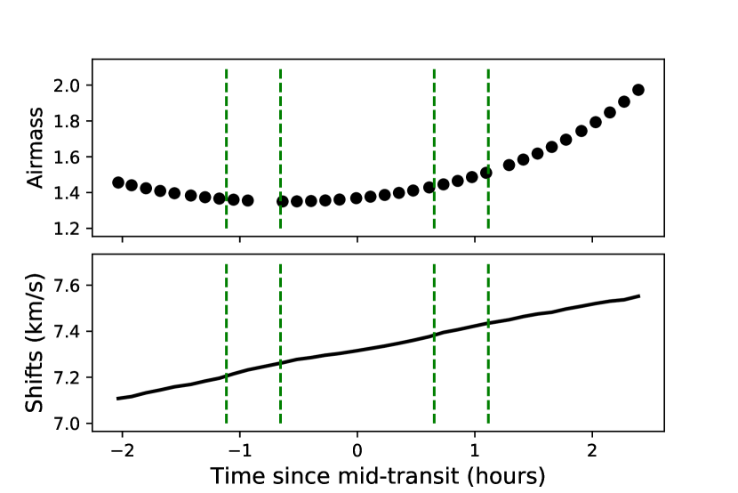
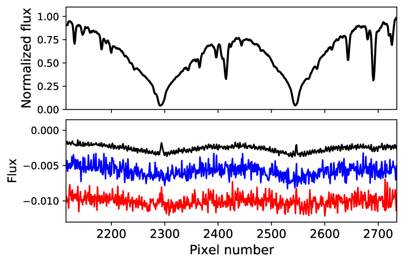
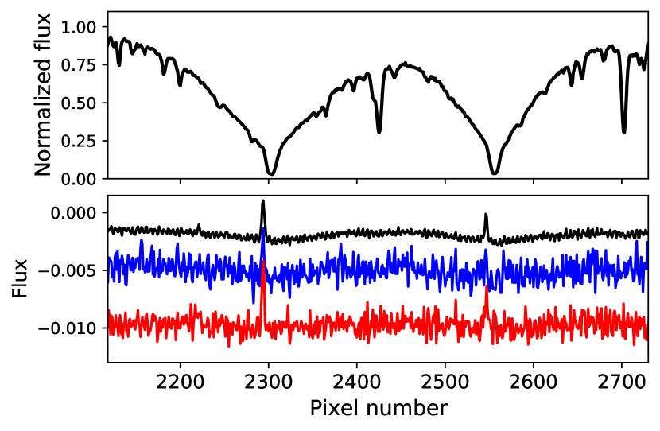
رُصدت ثلاثة عبورات للكوكب WASP-69 b بدأت في 2017 أغسطس 22، و2017 سبتمبر 22، و2020 أغسطس 13 باستخدام CARMENES (Calar Alto high-Resolution search for M dwarfs with Exoearths with near-infrared and optical Echelle Spectrographs; Quirrenbach et al. 2014, 2018) في القناتين المرئية (VIS) والقريبة من تحت الحمراء (NIR). تَرِد تفاصيل أول رصدين واختزال البيانات في Nortmann et al. (2018). اتبعت الليلة الثالثة أيضًا الاستراتيجية الرصدية نفسها.
فيما يلي، نلخص أولًا المعلومات المتعلقة بالرصد والاختزال الأولي للبيانات، ثم نشرح تحليلنا الخاص لبيانات CARMENES VIS بالتفصيل.
وُضع النجم الهدف في الليف A، في حين رُصدت السماء بالليف B على بعد 88 arcsec إلى الغرب.
تألف رصد الليلة الأولى من 35 طيفًا: 18 مأخوذة قبل العبور وبعده (خارج العبور) و17 أثناء العبور (داخل العبور).
وفي الليلة الثانية، حصلنا على 31 طيفًا، تتألف من 14 تعريضًا خارج العبور و17 تعريضًا داخل العبور.
وأخيرًا، التقطنا في الليلة الثالثة 34 تعريضًا، كان منها 17 خارج العبور و17 داخل العبور.
بلغ متوسط الرؤية في الليالي الأولى والثانية والثالثة 0.63 و0.69 و1.11 arcsec، على الترتيب.
كان زمن التعريض لكل إطار 398 s في جميع الحالات، وهو زمن قصير بما يكفي لإبقاء تغير السرعة الكوكبية أقل من 1 km s-1.
استخدمنا حجمًا متوسطًا مكافئًا للسرعة لبكسل CARMENES قدره 1.3 km s-1 كي لا نطمس الإشارة.
يُرسم تغير الكتلة الهوائية في الليلة الرصدية الأولى في اللوحة العليا من الشكل 1 (وتُعرض تغيرات الكتلة الهوائية في الليلتين الأخريين في الشكل 14 في الملحق B).
عولجت إطارات البيانات الخام الأولية عبر خط أنابيب CARMENES، caracal (CARMENES Reduction And Calibration; cf. Caballero et al. 2016).
حُوذيت الأطياف مع السرعات الشعاعية المقاسة بواسطة serval (Zechmeister et al. 2014)؛ كما أُخذت السرعات المركزية الباريّة والسرعة النظامية  (الجدول 1) في الحسبان أيضًا.
تُعرض قيم الإزاحات من هذين المصدرين في الليلة الأولى في اللوحة السفلى من الشكل 1 (انظر أيضًا الشكل 14 لليلتي الثانية والثالثة).
متوسط S/N لأطياف VIS هو 52 و40 و37 في الليالي الأولى والثانية والثالثة، على الترتيب.
(الجدول 1) في الحسبان أيضًا.
تُعرض قيم الإزاحات من هذين المصدرين في الليلة الأولى في اللوحة السفلى من الشكل 1 (انظر أيضًا الشكل 14 لليلتي الثانية والثالثة).
متوسط S/N لأطياف VIS هو 52 و40 و37 في الليالي الأولى والثانية والثالثة، على الترتيب.
صُححت سمات الامتصاص في الغلاف الجوي الأرضي باستخدام نماذج تلورية مولدة ببرنامج Molecfit (Smette et al. 2015; Kausch et al. 2015). وبالإضافة إلى ذلك، ولاستقصاء سمات الانبعاث التلوري المتراكبة على مزدوجة Na i D1 وD2، استخدمنا أطياف السماء التي جُمعت في الوقت نفسه بليف CARMENES B. يوضح الشكل 2 أطياف انبعاث السماء، التي تُظهر خطوط انبعاث الصوديوم التلورية في مركز خطوط الصوديوم النجمية تمامًا في متوسط جميع الأطياف.
هذه السمات الانبعاثية تعتمد على الكتلة الهوائية، ولذلك يمكن ربطها بصوديوم الغلاف الجوي الأرضي (Chapman 1939; Kolb and Elgin 1976; Noll et al. 2012)، أو قد تكون تلوثًا من مصابيح شوارع الصوديوم منخفضة الضغط (تُرى أضواء مدينتي Granada وAlmería القريبتين من Calar Alto، وتنعكس أحيانًا عن سحب رقيقة عالية). كان الانبعاث التلوري في الليلة الرصدية الثانية أقوى بعدة مرات من نظيره في الليلة الأولى. إضافة إلى ذلك، وُجد تلوث أداتي في التدفق في الليف B بسبب التداخل مع الليف A، ظهر في صورة طيف مُقاس من الليف A على طيف الليف B. ويمكن رؤية هذا التلوث في أطياف انبعاث السماء في اللوحات السفلى من الشكل 2 (إذ إن المتصل ليس مستقيمًا ويشبه في شكله الملمح الطيفي النجمي). لذلك، لم نتمكن من إزالة سمات انبعاث السماء ببساطة عبر طرح طيف الليف B الموافق من كل طيف. وبدلًا من ذلك، تجاهلنا أولًا سبعة أطياف ذات كتلة هوائية أكبر من 1.6، ثم حجبنا سمة الانبعاث كما هو موضح في القسم 3.2.2. ونستنتج أن أثر انبعاث السماء في الليلة الأولى (بعد إزالة الأطياف ذات الكتلة الهوائية الأكبر من 1.6) مهمل، لأن نتائجنا النهائية، قبل الحجب وبعده، هي نفسها.
لتطبيع الأطياف، نستخدم طريقة شبيهة بتلك التي استخدمها Khalafinejad et al. (2017).
حسبنا أولًا طيفًا متوسطًا، ثم، للحصول على ملمح المتصل، وجدنا نقاط البيانات العظمى في صناديق أطوال موجية قدرها  10 Å, مع تجاهل المنطقة المحيطة بالخط المستهدف (مثلًا، لخطوط Na D من
10 Å, مع تجاهل المنطقة المحيطة بالخط المستهدف (مثلًا، لخطوط Na D من  5887 Å إلى 5902 Å، ولـ H
5887 Å إلى 5902 Å، ولـ H من
من  6563 Å إلى 6567 Å).
ولتصحيح القيم الشاذة أو أي نتوءات متبقية، استبدلنا أي نقطة تنحرف بأكثر من 2
6563 Å إلى 6567 Å).
ولتصحيح القيم الشاذة أو أي نتوءات متبقية، استبدلنا أي نقطة تنحرف بأكثر من 2 بمتوسط نقطتيها المجاورتين.
ثم أجرينا استيفاءً خطيًا للنقاط العظمى لبناء شكل المتصل، وقسمنا كل طيف منفرد على هذا المنحنى المستوفى لتسطيح الطيف المتوسط.
بعد هذه المرحلة، طبعنا كل طيف مرة أخرى بقسمة كل طيف منفرد على وسيط النقاط في المتصل.
أجرينا التحليل لجميع الليالي بالتوازي.
غير أن الليلة الثانية كانت ملوثة بشدة بالسمات التلورية (انظر أعلاه)، وكانت قيم S/N في الليلتين الثانية والثالثة أدنى من الليلة الأولى.
لذلك استبعدنا الليلتين الثانية والثالثة من مرحلة النمذجة النهائية، مع أن نتائج هاتين الليلتين معروضة في الملحق B للمقارنة.
بمتوسط نقطتيها المجاورتين.
ثم أجرينا استيفاءً خطيًا للنقاط العظمى لبناء شكل المتصل، وقسمنا كل طيف منفرد على هذا المنحنى المستوفى لتسطيح الطيف المتوسط.
بعد هذه المرحلة، طبعنا كل طيف مرة أخرى بقسمة كل طيف منفرد على وسيط النقاط في المتصل.
أجرينا التحليل لجميع الليالي بالتوازي.
غير أن الليلة الثانية كانت ملوثة بشدة بالسمات التلورية (انظر أعلاه)، وكانت قيم S/N في الليلتين الثانية والثالثة أدنى من الليلة الأولى.
لذلك استبعدنا الليلتين الثانية والثالثة من مرحلة النمذجة النهائية، مع أن نتائج هاتين الليلتين معروضة في الملحق B للمقارنة.
2.2 القياس الضوئي طويل الأمد باستخدام STELLA
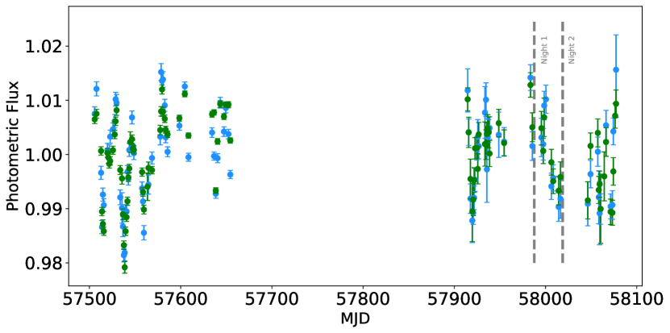
 (أزرق) و (أخضر) من رصودنا الضوئية طويلة الأمد باستخدام STELLA.
تشير الخطوط المتقطعة إلى أول ليلتين رصديتين لنا باستخدام CARMENES.
(أزرق) و (أخضر) من رصودنا الضوئية طويلة الأمد باستخدام STELLA.
تشير الخطوط المتقطعة إلى أول ليلتين رصديتين لنا باستخدام CARMENES.وُجد أن النجم المضيف WASP-69 يُظهر علامات نشاط نجمي بحسب Anderson et al. (2014). يسبب وجود البقع في الفوتوسفير النجمي تغيرات دورية عندما تدور إلى داخل مجال الرؤية وخارجه. قُدرت فترة دوران النجم بنحو 23 d، وأظهر التغير الضوئي نصف مطال قدره نحو 1 % (Anderson et al. 2014). ولتوصيف وجود البقع على نصف الكرة النجمي المرئي أثناء رصود العبور الطيفية لدينا، بدأنا حملة رصد ضوئي طويلة الأمد تغطي الرصدين الأول والثاني للعبور.
استخدمنا تلسكوب STELLA الآلي ذي القطر 1.2 m (Strassmeier et al. 2004) الواقع في Observatorio del Teide في Tenerife (Spain)، ومصوره واسع المجال WiFSIP (Weber et al. 2012). أُخذت الرصود من مايو إلى سبتمبر 2016 (53 ليلة) ومن يونيو إلى نوفمبر 2017
(40 ليلة) في كتل ليلية مكوّنة من ثلاثة تعريضات 8 s في Johnson وثلاثة تعريضات 6 s في Johnson  .
اختُزلت البيانات واستُخرجت منحنيات الضوء باتباع الإجراء الذي وصفه Mallonn et al. (2018).
باختصار، قُصّت إطارات الصور، وصُححت للانحياز والمجال المسطح باستخدام خط أنابيب STELLA القياسي.
ثم أجرينا قياسًا ضوئيًا بفتحة باستخدام Source Extractor (Bertin and Arnouts 1996).
اختبرنا أشكال فتحات مختلفة (دائرية مقابل إهليلجية مرنة) وأحجام فتحات مختلفة لنستخدم في النهاية الفتحة التي تقلل التشتت في منحنيات الضوء.
أنشأنا نجم مقارنة اصطناعيًا لمقادير الهدف التفاضلية بوصفه مجموع تدفقات مصادر منفردة متعددة.
وجرى الاختيار النهائي مرة أخرى عبر تقليل تشتت منحنى الضوء.
تحققنا من أن اختيار نجم المقارنة لا يملك تأثيرًا مهمًا في إشارة التغير الضوئي لـ WASP-69، وذلك باختبار مجموعات مختلفة من نجوم المقارنة يدويًا.
.
اختُزلت البيانات واستُخرجت منحنيات الضوء باتباع الإجراء الذي وصفه Mallonn et al. (2018).
باختصار، قُصّت إطارات الصور، وصُححت للانحياز والمجال المسطح باستخدام خط أنابيب STELLA القياسي.
ثم أجرينا قياسًا ضوئيًا بفتحة باستخدام Source Extractor (Bertin and Arnouts 1996).
اختبرنا أشكال فتحات مختلفة (دائرية مقابل إهليلجية مرنة) وأحجام فتحات مختلفة لنستخدم في النهاية الفتحة التي تقلل التشتت في منحنيات الضوء.
أنشأنا نجم مقارنة اصطناعيًا لمقادير الهدف التفاضلية بوصفه مجموع تدفقات مصادر منفردة متعددة.
وجرى الاختيار النهائي مرة أخرى عبر تقليل تشتت منحنى الضوء.
تحققنا من أن اختيار نجم المقارنة لا يملك تأثيرًا مهمًا في إشارة التغير الضوئي لـ WASP-69، وذلك باختبار مجموعات مختلفة من نجوم المقارنة يدويًا.
في الشكل 3 نعرض منحنى الضوء النهائي بعد تجميع التعريضات الثلاثة لكل مرشح في كل كتلة رصدية منفردة. خلال الليلة الثانية بدا النجم أخفت مقارنة بالليلة الأولى. وبعبارة أخرى، كان عامل ملء البقع على نصف الكرة النجمي المرئي أصغر في الليلة 1 مما كان عليه في الليلة 2. يمكن للمرء أن يجادل بأن الليلة الرصدية الأولى حصلت خلال فترة سطوع أعظمي للنجم، ما يعني أن البقع كانت في حدها الأدنى. وللأسف، لم نتمكن من إجراء أي رصود ضوئية متزامنة مع الليلة الرصدية الثالثة لـ CARMENES في 2020.
إضافة إلى ذلك، أعدنا قياس فترة دوران النجم.
ولهذا الغرض، استخدمنا مخطط Lomb-Scargle المعمم (GLS) (Zechmeister and Kürster 2009) واحتمالات الإنذار الكاذب (FAPs) المقابلة للبحث عن قمم مهمة من منحنيات الضوء الضوئية المتاحة في نطاقي  و
و من كل من 2016 و2017.
حصلنا على قمم عند 24.34 d و24.95 d فوق عتبة FAP البالغة 0.1 % لمجموعتي بيانات نطاقي 2016
من كل من 2016 و2017.
حصلنا على قمم عند 24.34 d و24.95 d فوق عتبة FAP البالغة 0.1 % لمجموعتي بيانات نطاقي 2016  و
و ، على الترتيب.
فسرنا إشارة
، على الترتيب.
فسرنا إشارة  24 d على أنها فترة دوران النجم، لأنها قريبة جدًا من فترة 23.07
24 d على أنها فترة دوران النجم، لأنها قريبة جدًا من فترة 23.07  0.16 d التي أبلغ عنها Anderson et al. (2014). وكمرجع، تُعرض مخططات الفترة ومنحنيات الضوء المطوية طورياً المتعلقة بهذا الرصد في الشكل 13.
وبالمقارنة، بالنسبة إلى مجموعات بيانات 2017، تُظهر مخططات GLS قممًا عند 48.24 d فوق مستوى FAP البالغ 10 % في نطاق
0.16 d التي أبلغ عنها Anderson et al. (2014). وكمرجع، تُعرض مخططات الفترة ومنحنيات الضوء المطوية طورياً المتعلقة بهذا الرصد في الشكل 13.
وبالمقارنة، بالنسبة إلى مجموعات بيانات 2017، تُظهر مخططات GLS قممًا عند 48.24 d فوق مستوى FAP البالغ 10 % في نطاق  ، وفوق مستوى FAP البالغ 0.1 % عند 11.70 d في بيانات
، وفوق مستوى FAP البالغ 0.1 % عند 11.70 d في بيانات  ، ويمكن عدها التوافقيات الأولى لإشارة
، ويمكن عدها التوافقيات الأولى لإشارة  24 d.
ربما يُعزى الفرق البالغ يومًا واحدًا بين فترات الدوران المقاسة إلى الدوران التفاضلي.
24 d.
ربما يُعزى الفرق البالغ يومًا واحدًا بين فترات الدوران المقاسة إلى الدوران التفاضلي.
3 مطيافية العبور
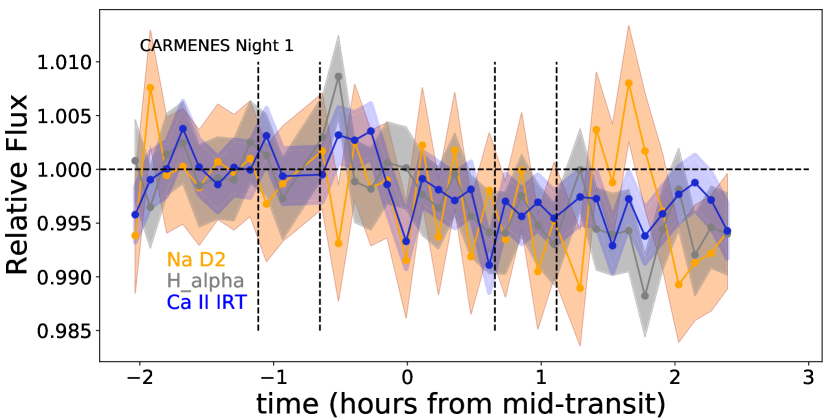
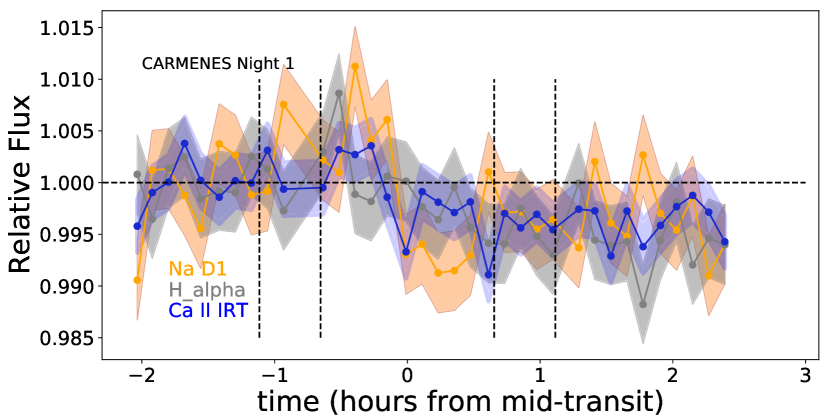
 (رمادي) وCa ii IRT (أزرق) في الليلة 1.
تشير الخطوط المتقطعة الرأسية إلى أزمنة التماس الأول والثاني والثالث والرابع، والخط الأفقي المتقطع يساوي الواحد.
يمكن مقارنة هذا الشكل بالشكل 15.
(رمادي) وCa ii IRT (أزرق) في الليلة 1.
تشير الخطوط المتقطعة الرأسية إلى أزمنة التماس الأول والثاني والثالث والرابع، والخط الأفقي المتقطع يساوي الواحد.
يمكن مقارنة هذا الشكل بالشكل 15.في هذا القسم نصف تحليل البيانات لمطيافية العبور عالية الاستبانة المنفذة باستخدام CARMENES (لليالي الثلاث جميعها) حول الخطوط القوية لـ Na i D1 وD2، وH ، وثلاثية Ca ii تحت الحمراء (IRT)، وK i
، وثلاثية Ca ii تحت الحمراء (IRT)، وK i  7699 Å.
وفي نهاية هذا القسم نناقش النتائج المرتبطة بالإشارات المكتشفة.
7699 Å.
وفي نهاية هذا القسم نناقش النتائج المرتبطة بالإشارات المكتشفة.
3.1 النشاط النجمي ومنحنيات الضوء الزائدة
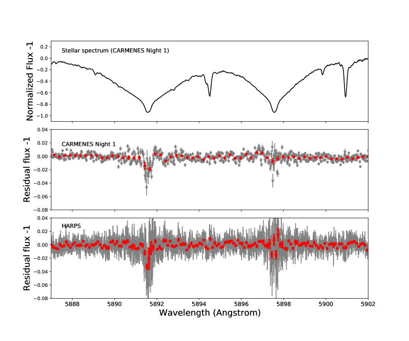
يشير التطور الزمني للعروض المكافئة لبعض الخطوط النجمية البارزة (مثل Ca ii H&K وH وCa ii IRT) إلى النشاط الكروموسفيري النجمي (مثلًا، Linsky et al. 1979; Notsu et al. 2013; Klocová et al. 2017).
ولاستقصاء التأثيرات المحتملة للنشاط النجمي في الإشارات الكوكبية الخارجية، درسنا أولًا التطور الزمني لنواة خطوط H
وCa ii IRT) إلى النشاط الكروموسفيري النجمي (مثلًا، Linsky et al. 1979; Notsu et al. 2013; Klocová et al. 2017).
ولاستقصاء التأثيرات المحتملة للنشاط النجمي في الإشارات الكوكبية الخارجية، درسنا أولًا التطور الزمني لنواة خطوط H وCa ii IRT وNa D، وقارناها بعضها ببعض.
في هذا القسم، نستخدم مصطلح “منحنى الضوء” للإشارة إلى السلاسل الزمنية لأنوية الخطوط (مؤشرات الخطوط).
ولهذا الغرض، بحثنا أولًا عن مركز كل خط عبر ملاءمة دالة غاوسية، ودمج التدفق في نطاق مرور 1.5 Å متمركز على نواة الخط، وقسمته على التدفق المدمج لنطاق مرجعي في المتصل (Khalafinejad et al. 2018). من حيث المبدأ، يمكن لملمح لورنزي أن يفسر شكل الخط أفضل من ملمح غاوسي؛ غير أنه، بسبب التشتت الكبير نسبيًا للبيانات هنا، لا يمتلك أي منهما أفضلية على الآخر.
طبعنا منحنيات الضوء بقسمة نقاط البيانات على وسيط مستوى خارج العبور.
وقدّرنا عدم اليقين من تشتت بيانات خارج العبور.
تُعرف السلاسل الزمنية التي نحصل عليها بهذه الطريقة باسم “منحنيات الضوء الزائدة”، ولها النمط نفسه للتطور الزمني للعرض المكافئ للخطوط.
يعرض الشكل 4 منحنيات الضوء الزائدة المقابلة في الليلة الأولى لكل من H
وCa ii IRT وNa D، وقارناها بعضها ببعض.
في هذا القسم، نستخدم مصطلح “منحنى الضوء” للإشارة إلى السلاسل الزمنية لأنوية الخطوط (مؤشرات الخطوط).
ولهذا الغرض، بحثنا أولًا عن مركز كل خط عبر ملاءمة دالة غاوسية، ودمج التدفق في نطاق مرور 1.5 Å متمركز على نواة الخط، وقسمته على التدفق المدمج لنطاق مرجعي في المتصل (Khalafinejad et al. 2018). من حيث المبدأ، يمكن لملمح لورنزي أن يفسر شكل الخط أفضل من ملمح غاوسي؛ غير أنه، بسبب التشتت الكبير نسبيًا للبيانات هنا، لا يمتلك أي منهما أفضلية على الآخر.
طبعنا منحنيات الضوء بقسمة نقاط البيانات على وسيط مستوى خارج العبور.
وقدّرنا عدم اليقين من تشتت بيانات خارج العبور.
تُعرف السلاسل الزمنية التي نحصل عليها بهذه الطريقة باسم “منحنيات الضوء الزائدة”، ولها النمط نفسه للتطور الزمني للعرض المكافئ للخطوط.
يعرض الشكل 4 منحنيات الضوء الزائدة المقابلة في الليلة الأولى لكل من H وCa ii IRT وخطوط Na D كل على حدة.
يمكن رؤية منحنيات الضوء الزائدة لليلتي 2 و3 في الشكل 15. لم يُظهر النجم أي توهج كروموسفيري قوي خلال أي من الليالي. كما عُرضت منحنيات الضوء الزائدة لـ Ca ii IRT مع He D3 بواسطة Nortmann et al. (2018) في الليلتين الأولى والثانية. ويتفق تحليلنا المعاد لـ Ca ii IRT في هاتين الليلتين مع نتيجتهم.
وCa ii IRT وخطوط Na D كل على حدة.
يمكن رؤية منحنيات الضوء الزائدة لليلتي 2 و3 في الشكل 15. لم يُظهر النجم أي توهج كروموسفيري قوي خلال أي من الليالي. كما عُرضت منحنيات الضوء الزائدة لـ Ca ii IRT مع He D3 بواسطة Nortmann et al. (2018) في الليلتين الأولى والثانية. ويتفق تحليلنا المعاد لـ Ca ii IRT في هاتين الليلتين مع نتيجتهم.
غير أن منحنيات الضوء الزائدة تُظهر مستوى خفيفًا من النشاط النجمي بلغ قيمة عظمى تقارب 1 % في أنوية H وCa ii IRT.
في الليلة 1 (الشكل 4)، تصرفت خطوط Na D على نحو مشابه لـ H
وCa ii IRT.
في الليلة 1 (الشكل 4)، تصرفت خطوط Na D على نحو مشابه لـ H وCa ii IRT.
وفي الليلتين 2 و3، كما يظهر في الشكل 15، أظهرت خطوط Na D تقلبات أكبر مقارنة بـ H
وCa ii IRT.
وفي الليلتين 2 و3، كما يظهر في الشكل 15، أظهرت خطوط Na D تقلبات أكبر مقارنة بـ H وCa ii IRT.
أحد التفسيرات الممكنة لهذه التقلبات هو انخفاض S/N عند 5892–5898 Å مقارنة بالخطوط الأخرى عند أطوال موجية أكثر احمرارًا.
عمومًا، لا تُظهر منحنيات الضوء الزائدة أي اتجاه واضح للامتصاص الجوي، ولذلك استخدمنا مقاربات أخرى لمزيد من استقصاء الغلاف الجوي للكوكب الخارجي.
وCa ii IRT.
أحد التفسيرات الممكنة لهذه التقلبات هو انخفاض S/N عند 5892–5898 Å مقارنة بالخطوط الأخرى عند أطوال موجية أكثر احمرارًا.
عمومًا، لا تُظهر منحنيات الضوء الزائدة أي اتجاه واضح للامتصاص الجوي، ولذلك استخدمنا مقاربات أخرى لمزيد من استقصاء الغلاف الجوي للكوكب الخارجي.
3.2 طيف العبور عند Na i D1 وD2
3.2.1 مقاربة القسمة عند Na D
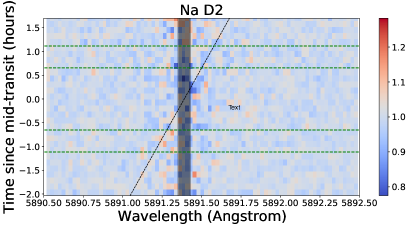
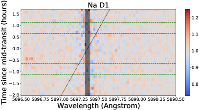
للحصول على طيف العبور باستخدام البيانات عالية الاستبانة، تتمثل طريقة بسيطة في قسمة متوسط أطياف داخل العبور على متوسط أطياف خارج العبور، وهو ما يسمى “master-out”. غير أنه، بسبب حركة الكوكب حول النجم، يجب تصحيح هذه المقاربة بأخذ السرعة الشعاعية للكوكب في الحسبان. حصلنا على طيف العبور لـ WASP-69 b باستخدام الطريقة الموصوفة تفصيلًا في Khalafinejad et al. (2018). وباختصار، قسمنا كل طيف داخل العبور على master-out، ثم حاذينا أطياف البواقي استنادًا إلى السرعة الشعاعية للكوكب الخارجي. وفي النهاية، جمعنا كل أطياف البواقي، وحسبنا متوسطها، واعتبرناه طيف العبور الكوكبي الخارجي لكل رصد عبور (الأشكال 5 و17). في طيف العبور لليلة الأولى، المعروض في اللوحة الوسطى من الشكل 5، تُظهر نواة خط Na i D2 امتصاصًا عند مستوى يقارب 2 %. غير أن Na i D1 لا يُظهر بصمة لأي امتصاص معتبر. وللمقارنة، نعرض أيضًا الطيف النجمي في اللوحة الأولى، وطيف العبور الذي حصل عليه Casasayas-Barris et al. (2017) من رصود HARPS-N في اللوحة السفلى من الشكل 5. تتفق نتائج الليلة الرصدية الأولى باستخدام CARMENES جيدًا مع نتائج بيانات HARPS-N. حُصل على أشرطة الخطأ لكل نقطة بيانات بنشر الأخطاء المرتبطة بالأطياف الخام. ولاستقصاء الخواص الفيزيائية للغلاف الجوي، دمجنا طيف العبور في ليلة CARMENES الأولى مع طيف بيانات HARPS-N (انظر القسم 4). وكما ذُكر في القسم 2.1، تأثرت الليلة الثانية بشدة بالسمات التلورية، وكانت S/N في الليلة الثالثة منخفضة نسبيًا. وفي النهاية، يُظهر طيف العبور في الليلة الثانية تشتتًا كبيرًا دون علامة على امتصاص كوكبي خارجي. وتُظهر نتائج الليلة الثالثة علامات محتملة على امتصاص كوكبي خارجي، ولكن بتشتت أكبر مما في الليلة الأولى. ومن ثم نستبعد هاتين الليلتين من نمذجتنا الجوية في القسم 4.2.
3.2.2 خريطة ثنائية الأبعاد للبواقي عند Na D
طريقة أخرى لتصوير سمات الامتصاص في أغلفة الكواكب الخارجية الجوية هي استقصاء مصفوفة أطياف البواقي الناتجة عن قسمة كل طيف منفرد على طيف النجم master-out. في الشكل 6، نعرض خريطة أطياف البواقي عند كل خط صوديوم في الليلة الأولى من رصود CARMENES (انظر الشكل 16 لليلتي الثانية والثالثة). البصمات الكوكبية الخارجية المتوقعة هي تلك الواقعة تحت الخطوط القطرية المنقطة. السمة الرأسية في الخلفية في كل لوحة هي منطقة S/N الأقل الناشئة من نواة خطوط الصوديوم النجمية. لم نر مسارًا واضحًا لامتصاص Na D الكوكبي الخارجي في هذه الخرائط. قد تعود أدنى البكسلات إلى الانبعاث التلوري أو تغيرية نواة الانبعاث النجمي، وكان علينا التأكد من أن الإشارة كلها في طيف العبور (المتحصل عليها عبر مقاربة القسمة، انظر القسم 3.2.1) لا تستند إلا إلى هذه القيم القليلة “الشاذة المحتملة”. لذلك أزلنا التعريضات التي تحتوي على بكسلات منخفضة جدًا على المسار الكوكبي الخارجي المتوقع وكررنا التحليل. لم نلاحظ أي تغيرات مهمة في شكل أطياف العبور بعد هذا الإجراء. إضافة إلى ذلك، حجبنا بالكامل النطاق الضيق الملوث بالانبعاثات التلورية استنادًا إلى أطياف الليف B. وتُعرض المنطقة المحجوبة تحت المساحة المظللة في الشكل 6. لم يغير حجب المنطقة كلها الشكل العام لطيف العبور أو مستوى الامتصاص؛ بل أدى ببساطة إلى أشرطة خطأ أكبر في طيف العبور للنقاط الواقعة في نواة الخط، لأن عددًا أقل من أطياف البواقي كوّن هذه المنطقة. أكد ذلك أن أثر انبعاث السماء (بعد إزالة آخر سبعة أطياف ذات أعلى كتلة هوائية) كان ضمن أشرطة خطأ الإشارة. وفي النهاية، لم نحجب المنطقة حفاظًا على أكبر عدد ممكن من أطياف داخل العبور.
نظرًا إلى أن خريطة 2D لا تكشف أي بصمة كوكبية خارجية، فإن أفضل طريقة لكشف الإشارة هي جمع الإشارة في جميع تعريضات داخل العبور، كما هو موضح في القسم 3.2.1.
3.3 طيف العبور عند H وخطوط أخرى
وخطوط أخرى
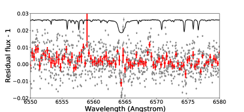
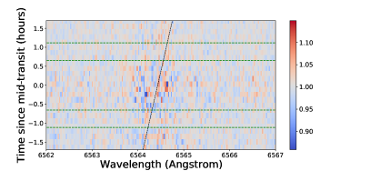
 في الليلة الثالثة.
الخط الأسود هو الطيف النجمي بعد تغيير مقياسه وإزاحته، والنقاط الرمادية مع أشرطة الخطأ الرمادية هي بواقي القسمة، والدوائر الحمراء المملوءة مع أشرطة الخطأ الحمراء هي البيانات المجمعة بعرض 0.3 Å (هنا تمثل أشرطة الخطأ الانحراف المعياري لكل مجموعة من نقاط البيانات المجمعة).
يمين: مثل الشكل 6 ولكن لـ H
في الليلة الثالثة.
الخط الأسود هو الطيف النجمي بعد تغيير مقياسه وإزاحته، والنقاط الرمادية مع أشرطة الخطأ الرمادية هي بواقي القسمة، والدوائر الحمراء المملوءة مع أشرطة الخطأ الحمراء هي البيانات المجمعة بعرض 0.3 Å (هنا تمثل أشرطة الخطأ الانحراف المعياري لكل مجموعة من نقاط البيانات المجمعة).
يمين: مثل الشكل 6 ولكن لـ H .
.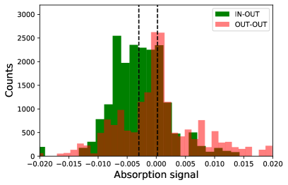
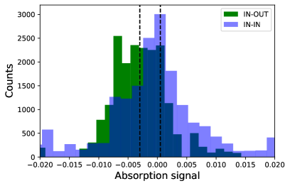
بالنسبة إلى جميع الليالي، استقصينا خط H الكوكبي الخارجي باستخدام مقاربة القسمة وخريطة البواقي 2D، كما في خطوط Na D.
لم نجد أي بصمات لـ H
الكوكبي الخارجي باستخدام مقاربة القسمة وخريطة البواقي 2D، كما في خطوط Na D.
لم نجد أي بصمات لـ H باستثناء الليلة الثالثة، التي أظهرت بصمة ضعيفة (الشكل 7).
يُظهر كل من طيف العبور ومخططات المصفوفة تلميحات إلى بصمات امتصاص H
باستثناء الليلة الثالثة، التي أظهرت بصمة ضعيفة (الشكل 7).
يُظهر كل من طيف العبور ومخططات المصفوفة تلميحات إلى بصمات امتصاص H في تلك الليلة.
تُظهر خريطة 2D تجمعًا موزعًا توزيعًا منتظمًا نسبيًا من البكسلات المنخفضة على المسار الكوكبي الخارجي المتوقع، وهو شبيه بسمة امتصاص He i
في تلك الليلة.
تُظهر خريطة 2D تجمعًا موزعًا توزيعًا منتظمًا نسبيًا من البكسلات المنخفضة على المسار الكوكبي الخارجي المتوقع، وهو شبيه بسمة امتصاص He i  10830 Å
التي عرضها Nortmann et al. (2018, الشكل S2 لديهم).
وفي طيف العبور، توجد أيضًا بصمة امتصاص عند H
10830 Å
التي عرضها Nortmann et al. (2018, الشكل S2 لديهم).
وفي طيف العبور، توجد أيضًا بصمة امتصاص عند H .
غير أننا نمتنع عن ادعاء كشف، لأن تقلبات بمستوى مشابه مرئية في جوار هذا الخط.
إضافة إلى ذلك، لم تُكشف أي سمة عند خط H
.
غير أننا نمتنع عن ادعاء كشف، لأن تقلبات بمستوى مشابه مرئية في جوار هذا الخط.
إضافة إلى ذلك، لم تُكشف أي سمة عند خط H في الليالي الأخرى، ولا سيما في الليلة الأولى ذات أعلى S/N.
في الليالي الأخرى، ولا سيما في الليلة الأولى ذات أعلى S/N.
وباستخدام طريقة مشابهة لتحليل خطوط Na D وH ، استقصينا ثلاثية Ca ii تحت الحمراء (IRT) وخطوط K i
، استقصينا ثلاثية Ca ii تحت الحمراء (IRT) وخطوط K i  7699 Å.
وباستخدام مقاربة القسمة والتمثيل 2D لأطياف البواقي في جوار هذه الخطوط، لم نلاحظ أي علامة امتصاص في أي من الخطوط.
7699 Å.
وباستخدام مقاربة القسمة والتمثيل 2D لأطياف البواقي في جوار هذه الخطوط، لم نلاحظ أي علامة امتصاص في أي من الخطوط.
3.4 قوة الإشارة عند Na D
للمقارنة بين نتائجنا والدراسات السابقة، طبقنا نموذجًا غاوسيًا مبسطًا على منطقة مزدوجة Na D في طيف العبور لدينا لتقدير قوة إشارة الامتصاص. استخدمنا مجموع ملمحين غاوسيين متمركزين على خطي مزدوجة Na D، وطبقنا إجراء Markov chain Monte Carlo (MCMC) باستخدام emcee (Foreman-Mackey et al. 2013a) لتحديد أفضل معلمات النموذج ولايقينياتها. وتُوصف تفاصيل هذا الإجراء، بما في ذلك القيم القبلية واللاحقة، في الملحق C.
قسنا إشارات امتصاص مقدارها 0.7 0.1% عند Na i D2 و0.3
0.1% عند Na i D2 و0.3 0.1% عند Na i D1، كلتاهما في نطاق مرور 1.5 Å.
وبعبارة أخرى، كشفنا امتصاصًا زائدًا بمستوى 7 عند Na i D2، وامتصاصًا زائدًا بمستوى 3
0.1% عند Na i D1، كلتاهما في نطاق مرور 1.5 Å.
وبعبارة أخرى، كشفنا امتصاصًا زائدًا بمستوى 7 عند Na i D2، وامتصاصًا زائدًا بمستوى 3 عند Na i D1.
ولتقدير نسبة D2/D1، أخذنا حاصل ضرب
عند Na i D1.
ولتقدير نسبة D2/D1، أخذنا حاصل ضرب  والمطال لكل خط وحصلنا على نسبة D2/D1 مقدارها 2.5 0.7.
والمطال لكل خط وحصلنا على نسبة D2/D1 مقدارها 2.5 0.7.
في تحليلنا، دلالة الكشف عند الصوديوم D1 أقل مما هي عليه عند D2. وهذا متسق مع نتائج Casasayas-Barris et al. (2017)، الذين لم يكشفوا امتصاصًا عند Na D1. وبوجه عام، يكون مقطع الامتصاص العرضي لخط D2 أكبر بما يصل إلى ضعفين منه في D1 (Draine 2011; Gebek and Oza 2020).
في حالتنا، تبلغ نسبة D2/D1 نحو 2.5  0.7، وهي تميل إلى أن تكون أقرب إلى الحد العلوي لما نتوقعه.
نستقصي بمزيد من التفصيل الخواص الفيزيائية للغلاف الجوي المستنتجة من هذه الخطوط في القسم 4.2.
قد يكون سبب عدم كشف الصوديوم بواسطة Deibert et al. (2019) مرتبطًا بحقيقة أن الإشارة عند خط الصوديوم D1 ضعيفة نسبيًا، وأن الإشارة الأقوى من خط الصوديوم D2 ليست كافية للظهور في طريقة الترابط المتبادل.
0.7، وهي تميل إلى أن تكون أقرب إلى الحد العلوي لما نتوقعه.
نستقصي بمزيد من التفصيل الخواص الفيزيائية للغلاف الجوي المستنتجة من هذه الخطوط في القسم 4.2.
قد يكون سبب عدم كشف الصوديوم بواسطة Deibert et al. (2019) مرتبطًا بحقيقة أن الإشارة عند خط الصوديوم D1 ضعيفة نسبيًا، وأن الإشارة الأقوى من خط الصوديوم D2 ليست كافية للظهور في طريقة الترابط المتبادل.
تجاهلنا تغير المركز إلى الطرف وتأثير Rossiter-McLaughlin.
استنادًا إلى Casasayas-Barris et al. (2017)، لا يتجاوز مطال الأول كسرًا صغيرًا (نحو عُشر عند 1.5 Å) من عمق الامتصاص المتوقع.
إضافة إلى ذلك، ليس النجم سريع الدوران ( km s-1)، والسرعة المدارية الكوكبية ( 127 km s-1) أسرع كثيرًا من الدوران النجمي.
لذلك، لم يجد Casasayas-Barris et al. (2017) تأثير Rossiter-Mclaughlin مهمًا.
127 km s-1) أسرع كثيرًا من الدوران النجمي.
لذلك، لم يجد Casasayas-Barris et al. (2017) تأثير Rossiter-Mclaughlin مهمًا.
3.5 دلالة الإشارة عند Na D
للتحقق من احتمال نتيجة إيجابية كاذبة في أطياف العبور لدينا، طبقنا تحليل bootstrap (أو مونت كارلو التجريبي) مشابهًا لما نفذه Redfield et al. (2008) وSeidel et al. (2020). استخرجنا عينات فرعية من أطياف داخل العبور وخارج العبور، وأنشأنا عشوائيًا ثلاث مجموعات من أطياف العبور. كانت المجموعة الأولى قسمة طيف داخل العبور عشوائي على طيف خارج العبور عشوائي (“in-out”)، والمجموعة الثانية قسمة عشوائية لطيف خارج العبور على طيف خارج العبور (“out-out”)، والمجموعة الثالثة قسمة عشوائية لطيف داخل العبور على طيف داخل العبور (“in-in”).
وبصورة مشابهة للإجراء في القسم 3.4، لائمنا دالة غاوسية لكل من بواقي القسمة وقدرنا إشارة الامتصاص عند خط D2 (أي المساحة تحت الغاوسية). ولكشف متين، ينبغي ألا تُظهر أطياف العبور المولدة في المجموعتين الثانية والثالثة أي امتصاص، أي يجب أن يكون توزيع إشارة الامتصاص فيها حول الصفر. غير أننا نتوقع أن يكون توزيع إشارة الامتصاص للمجموعة الأولى سالبًا.
يُعرض توزيع إشارات الامتصاص بعد 20 000 تكرارًا في الشكل 8.
ومن قياس متوسط هذه التوزيعات، قسنا ذروة إشارة امتصاص “in-out” عند القيمة السالبة –0.0030 0.0001، بينما توزعت المجموعتان الأخريان حول الصفر بمتوسط قيمة 0.0002
0.0001، بينما توزعت المجموعتان الأخريان حول الصفر بمتوسط قيمة 0.0002 0.0001 لـ “out-out” و0.0005
0.0001 لـ “out-out” و0.0005 0.0002 لـ “in-in”.
اعتبرنا احتمال الإيجابية الكاذبة مساويًا للانحراف المعياري لتوزيع “out-out” مضروبًا في الجذر التربيعي لكسر أطياف خارج العبور من العدد الكلي للأطياف لحساب اختيار العينة (Redfield et al. 2008; Astudillo-Defru and Rojo 2013; Wyttenbach et al. 2015; Seidel et al. 2020).
في هذه الحالة، كان احتمال الإيجابية الكاذبة لدينا 0.4 %، وهو لا يزال صغيرًا بما يكفي للاستنتاج بأننا قسنا إشارة امتصاص حقيقية من الكوكب.
0.0002 لـ “in-in”.
اعتبرنا احتمال الإيجابية الكاذبة مساويًا للانحراف المعياري لتوزيع “out-out” مضروبًا في الجذر التربيعي لكسر أطياف خارج العبور من العدد الكلي للأطياف لحساب اختيار العينة (Redfield et al. 2008; Astudillo-Defru and Rojo 2013; Wyttenbach et al. 2015; Seidel et al. 2020).
في هذه الحالة، كان احتمال الإيجابية الكاذبة لدينا 0.4 %، وهو لا يزال صغيرًا بما يكفي للاستنتاج بأننا قسنا إشارة امتصاص حقيقية من الكوكب.
4 النمذجة الجوية
وصّفنا الغلاف الجوي لـ WASP-69 b باستخدام مقاربة استرجاع من خطوتين. أولًا، أجرينا نمذجة جوية منخفضة الاستبانة، ثم استخدمنا معلمات خرج النموذج الأفضل ملاءمة، بما في ذلك معلومات مستوى المتصل (أي عتامة الضباب ودرجة الحرارة الجوية والضغط القاعدي) كأسبقيات لنمذجتنا عالية الاستبانة حول سمات Na D.
4.1 النمذجة الجوية منخفضة الاستبانة
حتى الآن، نمذجت عدة مجموعات الغلاف الجوي لـ WASP-69 b ضمن إطار الاسترجاع. استخدم Tsiaras et al. (2018) وFisher and Heng (2018) رصود WFC3/HST واسترجعا درجة حرارة الكوكب (متساوية الحرارة) ونصف قطره ووفرة الماء وخواص السحب. كانت استنتاجاتهما متشابهة، إذ أظهرت نصف قطر قريبًا من نصف قطر المشتري، وسمة ماء مخففة، ووجود هباءات غير رمادية، ووفرة ماء شمسية، ودرجة حرارة جوية منخفضة نسبيًا (492 53 K و658 K، على الترتيب في كل عمل) متسقة مع بياض عالٍ. ومؤخرًا، جمع Murgas et al. (2020) بيانات WFC3/HST هذه مع رصودهم البصرية من OSIRIS/GTC واستكشفوا تشتت رايلي إضافة إلى نسبة الكربون إلى الأكسجين (C/O) والفلزية في الغلاف الجوي. كما استقصى هؤلاء المؤلفون نشاط WASP-69 ووجود بقع نجمية، مختبرين ما إذا كان الميل المرصود في البيانات (زيادة نسبة نصف قطر الكوكب الظاهر إلى نصف قطر النجم باتجاه الأطوال الموجية الزرقاء) قد يكون نتيجة لبقع نجمية غير محجوبة بدلًا من جسيمات هباء موجودة في الغلاف الجوي الكوكبي (Pont et al. 2013; McCullough et al. 2014). أظهرت تحليلاتهم أن الميل المرئي في البيانات يرجح أن يكون ناجمًا عن ضباب موجود في الغلاف الجوي لـ WASP-69 b أكثر من كونه ناجمًا عن مناطق نجمية نشطة، كاشفة عن كوكب ذي تشتت رايلي قوي، ونسبة C/O دون شمسية، وفلزية عالية، ووفرة ماء فوق شمسية. علاوة على ذلك، استرجعوا درجات حرارة أعلى بكثير من الدراسات السابقة (1203 K و1227 K للحالتين مع البقع النجمية وبدونها، على الترتيب)، وهي درجات يصعب التوفيق بينها وبين النماذج القياسية للأغلفة الجوية الكوكبية، حتى مع افتراض غلاف جوي خالٍ من السحب (Carone et al. 2021, انظر أيضًا الجدول 1 في القسم 1).
53 K و658 K، على الترتيب في كل عمل) متسقة مع بياض عالٍ. ومؤخرًا، جمع Murgas et al. (2020) بيانات WFC3/HST هذه مع رصودهم البصرية من OSIRIS/GTC واستكشفوا تشتت رايلي إضافة إلى نسبة الكربون إلى الأكسجين (C/O) والفلزية في الغلاف الجوي. كما استقصى هؤلاء المؤلفون نشاط WASP-69 ووجود بقع نجمية، مختبرين ما إذا كان الميل المرصود في البيانات (زيادة نسبة نصف قطر الكوكب الظاهر إلى نصف قطر النجم باتجاه الأطوال الموجية الزرقاء) قد يكون نتيجة لبقع نجمية غير محجوبة بدلًا من جسيمات هباء موجودة في الغلاف الجوي الكوكبي (Pont et al. 2013; McCullough et al. 2014). أظهرت تحليلاتهم أن الميل المرئي في البيانات يرجح أن يكون ناجمًا عن ضباب موجود في الغلاف الجوي لـ WASP-69 b أكثر من كونه ناجمًا عن مناطق نجمية نشطة، كاشفة عن كوكب ذي تشتت رايلي قوي، ونسبة C/O دون شمسية، وفلزية عالية، ووفرة ماء فوق شمسية. علاوة على ذلك، استرجعوا درجات حرارة أعلى بكثير من الدراسات السابقة (1203 K و1227 K للحالتين مع البقع النجمية وبدونها، على الترتيب)، وهي درجات يصعب التوفيق بينها وبين النماذج القياسية للأغلفة الجوية الكوكبية، حتى مع افتراض غلاف جوي خالٍ من السحب (Carone et al. 2021, انظر أيضًا الجدول 1 في القسم 1).
4.1.1 إعداد النمذجة
لتقييم الخواص الجوية لـ WASP-69 b من المطيافية منخفضة الاستبانة، أجرينا عدة تحليلات استرجاعية باستخدام PyratBay (Python Radiative-transfer in a Bayesian framework, Cubillos and Blecic 2021; Blecic et al. 2021a, b) على مجموعتي بيانات WFC3/HST (Tsiaras et al. 2018) وOSIRIS/GTC (Murgas et al. 2020) المشتركتين. PyratBay إطار استرجاع مفتوح المصدر يولد نماذج جوية 1D لدرجات حرارة الكواكب ووفرة الأنواع وملامح الارتفاع والتغطية السحابية، باستخدام أحدث المعرفة بالعمليات الفيزيائية والكيميائية الجوية وبعتامات القلويات والجزيئات ورايلي المستحث بالتصادم والسحب. يستطيع الكود العمل في نمطي التنبؤ الأمامي والاسترجاع، مستفيدًا من الاتساق الذاتي أو من مخططات بارمترية مختلفة عند تضمين العمليات الجوية. في هذه الدراسة، طبقنا افتراضات فيزيائية أساسية دون استكشاف تراتبية النماذج المتاحة في إطار PyratBay. أنشأنا عدة إعدادات نمذجة لغرض توفير المعلومات الأساسية والمدخلات للتحليل عالي الاستبانة المعروض في القسم 4.2. وكجزء من جهد منسق، سيعرض Blecic et al. (2021c) تحليلات أمامية واسترجاعية مفصلة تغطي مستويات مختلفة من تعقيد النموذج، ويناقشون أثرها في طيف WASP-69 b.
في تحليلنا، جمعنا أيضًا بيانات WFC3/HST (Tsiaras et al. 2018) وOSIRIS/GTC (Murgas et al. 2020) واستكشفنا نماذج إضافية. أجرينا استرجاعين باستخدام مجموعتي بيانات مختلفتين. شمل كلا الاسترجاعين بيانات WFC3/HST من Tsiaras et al. (2018) (المشار إليها بـ WFC3 في النص التالي)، غير أن الأول شمل فقط بيانات OSIRIS/GTC من Murgas et al. (2020) جدول A.1 (المشار إليها بـ O1 في النص التالي)، بينما شمل الثاني أيضًا البيانات من جدولهم A.2 الذي يسرد الرصود حول خط Na (المشار إليها بـ O2). وبصرف النظر عن معلومات المتصل، أردنا أيضًا وضع قيود على وفرة الصوديوم، التي يمكننا بعد ذلك استخدامها كمدخلات للتحليل عالي الاستبانة ببيانات CARMENES وHARPS-N (القسم 4.2). ولتقييد نسبة خلط الصوديوم الحجمية، حسبنا عتامات خط الصوديوم الرنيني باتباع الصياغة الواردة في Burrows et al. (2000)، مستخدمين معلمات خط مزدوجة Na D الرنينية من Vienna Atomic Line Data Base (Piskunov et al. 1995).
وباتباع استنتاج Murgas et al. (2020)، افترضنا أن الميل المرئي في بيانات WFC3/HST وOSIRIS/GTC يأتي من جسيمات الهباء الموجودة في الغلاف الجوي الكوكبي وليس من بقع نجمية غير محجوبة. لذلك ضمّنا نموذج تشتت رايلي (Lecavelier Des Etangs et al. 2008) الذي أتاح لنا استكشاف وتقييد كل من عامل التعزيز () ودليل قانون القوة () لعتامة مقطع التشتت العرضي. كما ضمّنا نموذج سحب بسيطًا يتيح لـ MCMC خيار وضع سطح سحابي معتم تمامًا تحت ضغط معين (معلمة حرة في النموذج، ).
رغم أن عدة جزيئات تمتلك سمات طيفية في نطاقات أطوال WFC3/HST الموجية عند مجال درجات حرارة المشتريات الحارة (MacDonald and Madhusudhan 2017)، فقد اعتبرنا في هذا التحليل الماء فقط مصدرًا جزيئيًا رئيسيًا للعتامة واسترجعنا نسبة خلطه الحجمية (وفرته). أظهرت اختباراتنا الأولية التي شملت كل الأنواع ذات الصلة في النموذج أن الأنواع الإضافية لا تؤثر في أطياف WASP-69 b، وأن نموذج الماء فقط مفضل بدرجة مهمة، بنسبة احتمالات . ولم يؤثر هذا الاختيار للممتصات في القريب من تحت الأحمر في المتصل عند أطوال موجات مزدوجة Na D، وهو أمر مهم لتحليلنا عالي الاستبانة.
يُعد الماء أحد أكثر الأنواع وفرة عند درجات حرارة الاتزان لـ WASP-69 b المستكشفة في الجدول 1 (انظر أيضًا Blecic et al. 2016). كما يمتلك أوضح البصمات الطيفية عند أطوال موجات رصودنا. ولتضمين عتامة الماء، استخدمنا بيانات قوائم الخطوط الجزيئية ExoMol من Polyansky et al. (2018). وبما أن قاعدة البيانات هذه تتألف من مليارات انتقالات الخطوط، فقد طبقنا حزمة Repack (Cubillos 2017) لاستخراج أقوى الخطوط فقط التي تهيمن على طيف العتامة بين 300 K و3000 K. تسبب هذه المقاربة فرقًا أقل من 1 في dex مقارنة بقوائم الخطوط الأصلية (Cubillos and Blecic 2021)، لكنها تحسن السرعة الحسابية بدرجة كبيرة. وإلى جانب عتامات الماء والصوديوم، تضمنت نماذجنا أيضًا الامتصاص المستحث بالتصادم من H2-H2 من Borysow et al. (2001) وBorysow (2002)، ومن H2-He من Richard et al. (2012).
في dex مقارنة بقوائم الخطوط الأصلية (Cubillos and Blecic 2021)، لكنها تحسن السرعة الحسابية بدرجة كبيرة. وإلى جانب عتامات الماء والصوديوم، تضمنت نماذجنا أيضًا الامتصاص المستحث بالتصادم من H2-H2 من Borysow et al. (2001) وBorysow (2002)، ومن H2-He من Richard et al. (2012).
في العبور، تسافر الأشعة النجمية عبر طرف الغلاف الجوي، فتستقصي فقط الارتفاعات العالية (الضغوط المنخفضة) من الغلاف الكوكبي، عادة حتى مستوى 0.1 bar. إضافة إلى ذلك، لا تحمل الرصود منخفضة الاستبانة على مدى ضيق من الأطوال الموجية، كتلك المستخدمة في تحليلنا، معلومات كافية تسمح لنا بمزيد من تقييد ملامح درجات الحرارة المعقدة (Rocchetto et al. 2016; Barstow et al. 2013). لذلك، عند استرجاع درجة حرارة الغلاف الجوي، افترضنا ملمح درجة حرارة متساوي الحرارة.
| Parameter | Symbol (unit) | Prior | Retrieved valuea | |
| Planet temperature | (K) | |||
| Planet radius | (RJup) | |||
| Water abundance | ||||
| Sodium abundance | … | |||
| Rayleigh strength/enhancement factor | ||||
| Rayleigh power-law index | ||||
| Top cloud pressure | (bar) | |||
| Bayesian information criterion | BIC | … | 63.22 | 78.55 |
 المقابلة للاسترجاعات المنفذة باستخدام بيانات WFC3 و
المقابلة للاسترجاعات المنفذة باستخدام بيانات WFC3 وفي جميع الاسترجاعات، ضمّنا أيضًا معلمة إزاحة لنسبة نصف قطر الكوكب إلى النجم بين رصود WFC3 وOSIRIS، وهي  . فقيم الإزاحة، من رتبة تلك التي استرجعها Murgas et al. (2020, (انظر قسمهم 5))، لها تأثير قوي، وغالبًا حاسم، في الخواص الجوية المسترجعة. وهناك عدة أسباب محتملة لظهور مثل هذه الإزاحة
. فقيم الإزاحة، من رتبة تلك التي استرجعها Murgas et al. (2020, (انظر قسمهم 5))، لها تأثير قوي، وغالبًا حاسم، في الخواص الجوية المسترجعة. وهناك عدة أسباب محتملة لظهور مثل هذه الإزاحة  بين هذه الرصود: قد تكون ناشئة عن معلمات نظامية مختلفة اعتمدت أثناء إجراءات اختزال بيانات WFC3 وOSIRIS (Alexoudi et al. 2018, 2020)، أو عن أخطاء منهجية أداتية مختلفة لم تُعالج معالجة كاملة (مثلًا، May and Stevenson 2020; Gibson et al. 2012)، و/أو عن النشاط النجمي. استكشف Murgas et al. (2020) قيمًا محتملة لإزاحة
بين هذه الرصود: قد تكون ناشئة عن معلمات نظامية مختلفة اعتمدت أثناء إجراءات اختزال بيانات WFC3 وOSIRIS (Alexoudi et al. 2018, 2020)، أو عن أخطاء منهجية أداتية مختلفة لم تُعالج معالجة كاملة (مثلًا، May and Stevenson 2020; Gibson et al. 2012)، و/أو عن النشاط النجمي. استكشف Murgas et al. (2020) قيمًا محتملة لإزاحة  بسبب اختلاف معلمات النظام، وحسبوا الإزاحة المتبقية بافتراض أنها تأتي من النشاط النجمي. ويؤكد تحليلنا في القسم 2.2، والشكل 3، والقسم 3.1 أيضًا وجود نشاط في النجم WASP-69.
بسبب اختلاف معلمات النظام، وحسبوا الإزاحة المتبقية بافتراض أنها تأتي من النشاط النجمي. ويؤكد تحليلنا في القسم 2.2، والشكل 3، والقسم 3.1 أيضًا وجود نشاط في النجم WASP-69.
ولمعالجة ذلك، سمحنا في البداية بأن تكون معلمة حرة في نموذجنا. غير أن أيًا من استرجاعاتنا لم يتمكن من وضع قيود على هذه المعلمة، مسببًا في الوقت نفسه ترابطات متعددة بين معلمات حرة أخرى (نستكشف هذه الترابطات والتناظرات في ورقتنا التالية Blecic et al. 2021c). هنا، اعتمدنا ppm (نزيح بيانات WFC3 إلى أعلى)، وهو ما يقابل الإزاحة التي استرجعها Murgas et al. (2020, انظر جدولهم 4) لحالتهم دون بقع نجمية. ويستند قرارنا باختيار هذه القيمة إلى كونها قابلة للمقارنة مع تغيرية التدفق النجمي البالغة  2.4 % التي وجدها Anderson et al. (2014)، على افتراض أن هذه التغيرية تحدث في مناطق لا يحجبها الكوكب. ونشير إلى أننا، باعتماد إزاحة ثابتة في هذا التحليل، أهملنا بعض اللايقينيات الناجمة عن الترابطات والتناظرات.
2.4 % التي وجدها Anderson et al. (2014)، على افتراض أن هذه التغيرية تحدث في مناطق لا يحجبها الكوكب. ونشير إلى أننا، باعتماد إزاحة ثابتة في هذا التحليل، أهملنا بعض اللايقينيات الناجمة عن الترابطات والتناظرات.
تكوّن نموذج غلافنا الجوي من 50 طبقة متساوية التباعد في لوغاريتم الضغط، تمتد من 102 bar إلى 10-8 bar، وضمّنا كل الأنواع الجزيئية ذات الصلة بالأغلفة الجوية التي يهيمن عليها الهيدروجين وبنسبة C/O شمسية (H2، He، H2O، CH4، CO، CO2، HCN، N2، NH3)، وكذلك الصوديوم. استخدمنا كود TEA (Blecic et al. 2016) لحساب وفرة الاتزان الكيميائي لجميع الأنواع عند 1000 K، واستخدمناها للغلاف الجوي النموذجي الأولي بافتراض أن وفرة الأنواع تبقى ثابتة مع الارتفاع. في الاسترجاع، نترك وفرة H2O بوصفها المعلمة الحرة الوحيدة في نموذجنا، بينما أبقينا وفرة الأنواع الأخرى عند قيمها الأولية. وضعنا نصف قطر العبور الكوكبي عند مستوى ضغط 0.01 bar، وحسبنا ملمح الارتفاع بافتراض الاتزان الهيدروستاتيكي. وتُدرج معلمات النظام المستخدمة لتوليد الأطياف في الجدول 1.
قيدنا المعلمات الجوية المدرجة في الجدول 2 بافتراض أسبقيات منتظمة أو لوغاريتمية منتظمة واسعة لجميع المعلمات. استكشفنا فضاء المعلمات اللاحق باستخدام كود MCMC للتطور التفاضلي Snooker (DEMC, ter Braak 2006; ter Braak and Vrugt 2008)، وحصلنا على ما بين مليونين وستة ملايين عينة (بعد طرح أول 10 000 تكرار). وضمن ذلك بقاء إحصاءات Gelman and Rubin (1992) عند 1.01 أو أدنى لكل معلمة حرة. ولتحديد النموذج الأفضل ملاءمة بين النماذج المتولدة على مجموعة البيانات نفسها، استخدمنا معيار المعلومات البايزي، BIC = .
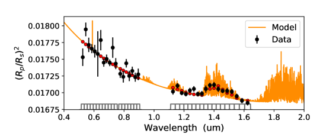
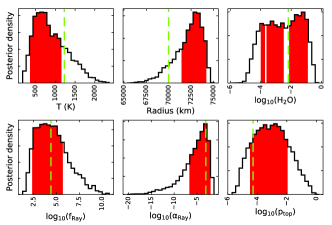
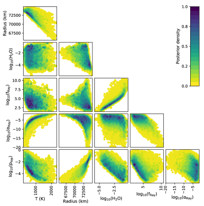
4.1.2 نتائج الاسترجاع
يعرض الشكل 9 نموذج الطيف الأفضل ملاءمة لحالة بيانات WFC3 وO1. في هذه الحالة، استرجعنا درجة حرارة الكوكب ونصف قطره ووفرة الماء وميل رايلي وعامل القوة، والضغط العلوي لسطح سحابي معتم. تُعطى قيم المعلمات المتوسطة مع لايقينيات 1 في الجدول 2، بينما تُعرض قيم المعلمات الأفضل ملاءمة في مخططات الكثافة اللاحقة في اللوحة اليسرى من الشكل 10. وفي اللوحة اليمنى من الشكل 10، نعرض مخططات الترابط الزوجية مع الكثافات اللاحقة. يعرض الشكل 11 النموذج الأفضل ملاءمة ومخططات الكثافة اللاحقة لحالة بيانات WFC3 وO2. في هذه الحالة، إضافة إلى المعلمات المدرجة أعلاه، استرجعنا أيضًا وفرة الصوديوم. وتُظهر الأشكال 9 و 11 ملاءمات جيدة للبيانات في الحالتين.
في الجدول 2، بينما تُعرض قيم المعلمات الأفضل ملاءمة في مخططات الكثافة اللاحقة في اللوحة اليسرى من الشكل 10. وفي اللوحة اليمنى من الشكل 10، نعرض مخططات الترابط الزوجية مع الكثافات اللاحقة. يعرض الشكل 11 النموذج الأفضل ملاءمة ومخططات الكثافة اللاحقة لحالة بيانات WFC3 وO2. في هذه الحالة، إضافة إلى المعلمات المدرجة أعلاه، استرجعنا أيضًا وفرة الصوديوم. وتُظهر الأشكال 9 و 11 ملاءمات جيدة للبيانات في الحالتين.
نلاحظ ميل رايلي حادًا من  m باتجاه الأطوال الموجية الأقصر. تؤكد دوال العبور أن الغلاف الجوي يصبح معتمًا فوق 10-4 bar بالنسبة إلى الرصود في القريب من تحت الأحمر، وفوق 10-5 bar بالنسبة إلى الرصود البصرية. هذا السلوك متوقع، إذ يصبح تشتت رايلي بارزًا جدًا دون 1
m باتجاه الأطوال الموجية الأقصر. تؤكد دوال العبور أن الغلاف الجوي يصبح معتمًا فوق 10-4 bar بالنسبة إلى الرصود في القريب من تحت الأحمر، وفوق 10-5 bar بالنسبة إلى الرصود البصرية. هذا السلوك متوقع، إذ يصبح تشتت رايلي بارزًا جدًا دون 1  m عندما تجعل جسيمات الهباء ذات الأحجام الأصغر من طول موجة الضوء أو المساوية له الغلاف الجوي معتمًا للإشعاع الوارد. تتناسب عتامة رايلي عادة مع . أجرى Mallonn and Wakeford (2017) دراسة مقارنة لميول التشتت لكل الكواكب في Sing et al. (2016) مع HAT-P-32 b وGJ~3470 b، ووجدوا أن غالبيتها تمتلك قيم ميل (بين –1 و–3)، مع قيمتين شاذتين (HD~189733 b وGJ~3470 b) لهما . ووجدت دراسات لاحقة أجراها Ohno and Kawashima (2020) وMay et al. (2020) أن ميول رايلي يمكن بالفعل أن تكون أكثر انحدارًا من –4. ناقش هؤلاء المؤلفون فكرة أن تدرجات العتامة يمكن أن تتولد طبيعيًا في المشتريات الحارة بأنواع أخرى غير H وH2 وHe، مثل الضباب الكيميائي الضوئي، عندما يكون الخلط الدوامي في الغلاف الجوي الكوكبي عالي الكفاءة. وتتسق هذه النتائج مع ما توصل إليه Pinhas et al. (2019) وWelbanks et al. (2019b)، اللذان حصلا على دليل طيفي وسيط مقداره لمجموعات مختلفة من كواكب المشتري الحارة. يكشف كلا تحليلينا (الجدول 2 والأشكال 10 و 11) عن ميل رايلي من رتبة ، وهو أكثر انحدارًا من الميل الناجم عن جسيمات الهباء الصغيرة جدًا.
m عندما تجعل جسيمات الهباء ذات الأحجام الأصغر من طول موجة الضوء أو المساوية له الغلاف الجوي معتمًا للإشعاع الوارد. تتناسب عتامة رايلي عادة مع . أجرى Mallonn and Wakeford (2017) دراسة مقارنة لميول التشتت لكل الكواكب في Sing et al. (2016) مع HAT-P-32 b وGJ~3470 b، ووجدوا أن غالبيتها تمتلك قيم ميل (بين –1 و–3)، مع قيمتين شاذتين (HD~189733 b وGJ~3470 b) لهما . ووجدت دراسات لاحقة أجراها Ohno and Kawashima (2020) وMay et al. (2020) أن ميول رايلي يمكن بالفعل أن تكون أكثر انحدارًا من –4. ناقش هؤلاء المؤلفون فكرة أن تدرجات العتامة يمكن أن تتولد طبيعيًا في المشتريات الحارة بأنواع أخرى غير H وH2 وHe، مثل الضباب الكيميائي الضوئي، عندما يكون الخلط الدوامي في الغلاف الجوي الكوكبي عالي الكفاءة. وتتسق هذه النتائج مع ما توصل إليه Pinhas et al. (2019) وWelbanks et al. (2019b)، اللذان حصلا على دليل طيفي وسيط مقداره لمجموعات مختلفة من كواكب المشتري الحارة. يكشف كلا تحليلينا (الجدول 2 والأشكال 10 و 11) عن ميل رايلي من رتبة ، وهو أكثر انحدارًا من الميل الناجم عن جسيمات الهباء الصغيرة جدًا.
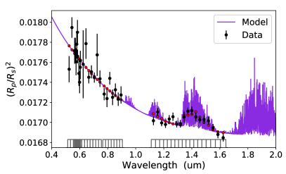
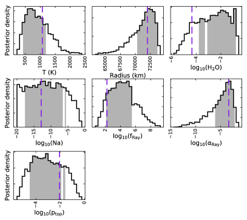
لم يُرجع أي من استرجاعاتنا قيودًا قوية على درجة حرارة الكوكب. تُظهر اللوحة اليسرى من الشكل 10 أن منطقة 1 تمتد حول 800 K (القسم الأحمر، اللوحة اليسرى العليا). غير أن القيمة المتوسطة قريبة من درجة حرارة اتزان الكوكب، بافتراض بياض وإعادة توزيع طاقة كفؤة. ونصف قطر الكوكب وميل رايلي هما الأكثر تقييدًا بمتانة، كاشفين عن كوكب نصف قطره قريب جدًا من نصف قطر المشتري وله تشتت رايلي قوي.
تمتد حول 800 K (القسم الأحمر، اللوحة اليسرى العليا). غير أن القيمة المتوسطة قريبة من درجة حرارة اتزان الكوكب، بافتراض بياض وإعادة توزيع طاقة كفؤة. ونصف قطر الكوكب وميل رايلي هما الأكثر تقييدًا بمتانة، كاشفين عن كوكب نصف قطره قريب جدًا من نصف قطر المشتري وله تشتت رايلي قوي.
تبدو وفرة الماء ثنائية النمط قليلًا (شمسية وفوق شمسية) في الحالة الأولى (الشكل 10، بيانات O1)، مع ميل نحو قيم كبيرة، ، ومقيدة على نحو فضفاض في الحالة الثانية (الشكل 11، بيانات O2)، ممتدة على عدة رتب مقدار بين 10-4 (شمسية) و10-1 (فوق شمسية) في نسبة الخلط الحجمية. يمتلك WASP-69 b نصف قطر شبيهًا بالمشتري، لكنه ذو كتلة صغيرة جدًا (0.26 MJup).
أظهر Welbanks et al. (2019b) وجود اتجاه فلزية لزيادة وفرة الماء مع تناقص الكتلة بالانتقال من كواكب العمالقة الغازية إلى نبتونات مصغرة. وعلى وجه الخصوص، تُظهر كواكب منخفضة الكتلة مثل HATP-26 b وWASP-39 b وWASP-127b وفرة ماء فوق شمسية من رتبة  وأصغر. واقترح Welbanks et al. (2019b) أن هذا الاتجاه قد يكون نتيجة لمسارات تكوّن مختلفة عن تلك المفترضة عادة لكواكب المشتري الحارة.
وأصغر. واقترح Welbanks et al. (2019b) أن هذا الاتجاه قد يكون نتيجة لمسارات تكوّن مختلفة عن تلك المفترضة عادة لكواكب المشتري الحارة.
في الحالة الثانية (بيانات O2)، أضفنا أيضًا الصوديوم بوصفه مصدرًا إضافيًا للعتامة وسمحنا بأن تكون وفرته معلمة حرة في النموذج. أعاد هذا الاسترجاع نتائج مشابهة لتلك في الحالة الأولى، حيث امتلكت معظم المعلمات قيمًا ونطاقات ثقة متشابهة (الأشكال 9 و 11؛ انظر أيضًا الجدول 2). كما بدا الطيف، وتوزيعات درجة الحرارة اللاحقة، ودوال العبور، ومخططات الترابط للحالة الثانية قابلة للمقارنة مع مخططات الحالة الأولى (الأشكال 9 و 10). وفرة الصوديوم، وهي موضع الاهتمام هنا، مقيدة على نحو فضفاض إلى . ونظرًا إلى أن هذه الوفرة مهملة وتسبب عتامة صوديوم منخفضة جدًا، فإن النموذج الأفضل ملاءمة في الشكل 11 لا يُظهر أي أثر لمزدوجة الصوديوم في الطيف. أما الصوديوم، إن كان حاضرًا ووفيرًا، فسيكون له بخلاف ذلك بصمة مميزة عند 5895 Å.
تتفق نتائجنا (الجدول 2) جيدًا مع نتائج التحليلات السابقة (القسم 4.1.1)، ولا سيما مع نتائج Murgas et al. (2020) الذين استخدموا مجموعات البيانات نفسها. فنصف القطر الكوكبي ودرجة الحرارة ومعلمات رايلي المسترجعة لدينا متسقة مع نتائجهم. كما وجد Murgas et al. (2020) فلزية جوية عالية (مع نسبة C/O منخفضة مقارنة بالشمس)، مما سبب وفرة ماء فوق شمسية من رتبة القيمة التي استرجعناها.
4.2 النمذجة الجوية عالية الاستبانة
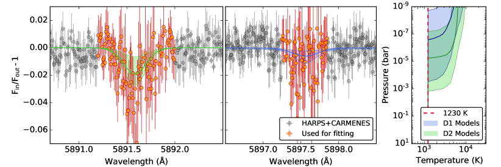
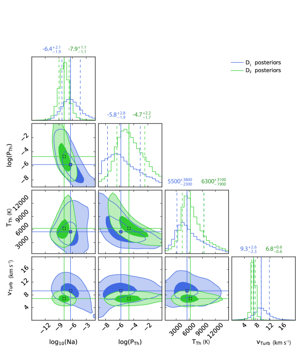
 و على أنهما و، على الترتيب، كما هو شائع في نتائج MCMC متعددة المتغيرات.
و على أنهما و، على الترتيب، كما هو شائع في نتائج MCMC متعددة المتغيرات.أشار تحليلنا في القسمين 3.4 و3.5 إلى إمكانية استخلاص معلومات من مجموعات البيانات عالية الاستبانة الحالية. وبالمثل، نُظهر في القسم 4.1 أن محتوى المعلومات في الطيف منخفض الاستبانة مهم إحصائيًا. في هذا القسم، نناقش خطوات توصيف الثرموسفير العلوي لـ WASP-69 b باستخدام المعلمات الجوية المسترجعة من مجموعات البيانات منخفضة الاستبانة كمدخلات، ودمجها مع رصود CARMENES (الليلة الأولى) وHARPS-N.
تطبيع المتصل خطوة شائعة في اختزال الأطياف عالية الاستبانة لأغلفة الكواكب الخارجية الجوية. غير أن هذا التطبيع يأتي على حساب فقدان معلومات المتصل، وهو ما يسبب بدوره تناظرات إضافية في القيم المسترجعة (Fisher and Heng 2019). يحدث تناظر شائع في الدراسات عالية الاستبانة بين الوفرة المسترجعة للنوع والضغط المرجعي ودرجة حرارة الغلاف الجوي (مثلًا Brogi and Line 2019)، حيث يمكن لتركيبات مختلفة من هذه المعلمات أن تنتج ملامح خطوط متشابهة. وتصبح هذه المسألة مهمة على نحو خاص عندما تكون S/N منخفضة نسبيًا. غير أن شكل الخط الدقيق عند S/N عالية يمكن أن يكسر التناظرات إلى حد ما (مثلًا، Benneke and Seager 2012; Heng and Kitzmann 2017; Brogi and Line 2019; Gibson et al. 2020, ؛ انظر أيضًا Welbanks et al. (2019a) لمناقشة مشابهة حول تناظرات الاسترجاع منخفض الاستبانة). ولكسر هذه التناظرات وتقدير المتصل عند مزدوجة Na D، استخدمنا معلمات النموذج من الأطياف منخفضة الاستبانة كما قُدرت في القسم السابق (انظر قيم المعلمات الأفضل ملاءمة في مدرجات الشكلين 11 و10) كأسبقيات للنموذج الجوي عالي الاستبانة.
استخدمنا تنفيذًا بلغة Python لـ emcee (Goodman and Weare 2010; Foreman-Mackey et al. 2013b)، يسمى MCKM، لأخذ عينات من فضاء المعلمات بفعالية. يتعامل MCKM مع أي عدد اعتباطي من معلمات النموذج عبر خطوات منتظمة (ديكارتية) أو غير منتظمة التباعد، ومع أي عدد اعتباطي من نقاط البيانات ومصفوفات التغاير الخاصة بها. يمكن تقدير اللايقينيات الرصدية عبر عملية غاوسية باستخدام طيف متنوع من النوى. افترضنا أسبقيات غير معلوماتية لتهيئة 1000 walkers في عملية MCMC وكررنا حتى تقارب الحل.
يلخص الجدول 3 معلمات النموذج، أي وفرة Na، وضغط بداية الثرموسفير، ودرجة حرارة الثرموسفير، والسرعة الاضطرابية الفعالة، وأسبقياتها. استخدمنا محلل النقل الإشعاعي الأساسي في petitRADTRANS (Mollière et al. 2019) لحساب نماذج نقل إشعاعي أمامية، وضمّنا الاتساع بسبب السرعة الاضطرابية. ولنموذج أثر السرعة الاضطرابية، نفترض توزيع سرعات غاوسيًا، باعتبار السرعة الاضطرابية الفعالة تباين التوزيع وبسرعة كلية صفرية. أعددنا النموذج عالي الاستبانة بتقطيع الغلاف الجوي 1D إلى 150 طبقة، متباعدة خطيًا في الارتفاع. وضعنا الحد السفلي عند 1 bar والحد العلوي عند bar لحل مراكز الثقل في هندسة مماسية ملائمة لمطيافية العبور.
قصصنا أيضًا البيانات عالية الاستبانة لاستبعاد نقاط البيانات البعيدة عن الإشارة وتسريع الاسترجاع. وتُعرض البيانات المقصوصة في الشكل 12. لم يغير تضمين النقاط المستبعدة النتائج، وكانت التوزيعات اللاحقة متينة إزاء اختيار أطوال موجات القص خارج المنطقة المستخدمة.
لتفسير نسب D2/D1 الكبيرة (أي 2.5 0.7؛ انظر القسم 3.4)، افتُرض أن D2 وD1 قد يستقصيان مناطق مختلفة من الثرموسفير بدرجات حرارة مختلفة.
ومن الاحتمالات الأخرى أثر عمليات الاتزان الديناميكي الحراري غير المحلي (nonLTE) (Lind et al. 2011) أو مساهمة صوديوم رقيقة بصريًا في تركيب الثرموسفير (Gebek and Oza 2020).
اختبرنا هذه الفرضيات بملاءمة نموذج النقل الإشعاعي لدينا لخطي D2 وD1 كل على حدة، وبمقارنة التوزيعات اللاحقة لمعلمات النموذج الناتجة.
0.7؛ انظر القسم 3.4)، افتُرض أن D2 وD1 قد يستقصيان مناطق مختلفة من الثرموسفير بدرجات حرارة مختلفة.
ومن الاحتمالات الأخرى أثر عمليات الاتزان الديناميكي الحراري غير المحلي (nonLTE) (Lind et al. 2011) أو مساهمة صوديوم رقيقة بصريًا في تركيب الثرموسفير (Gebek and Oza 2020).
اختبرنا هذه الفرضيات بملاءمة نموذج النقل الإشعاعي لدينا لخطي D2 وD1 كل على حدة، وبمقارنة التوزيعات اللاحقة لمعلمات النموذج الناتجة.
يلخص الجدول 3 أيضًا التوزيعات اللاحقة للمعلمات، ويوضح الشكل 12 النماذج الأفضل ملاءمة للبيانات وكذلك توزيعات الاحتمال اللاحقة المسترجعة لمعلمات النموذج. نجد أن قيم المعلمات المسترجعة متسقة إحصائيًا، مما يشير إلى أن الخطين قد ينشآن من المنطقة نفسها وعند درجات حرارة متشابهة. وكذلك، في ضوء نتائجنا، لا حاجة إلى عمليات nonLTE لتفسير نسبة D2/D1 المرصودة.
تشير وفرة الصوديوم المسترجعة من خطي D2 وD1 إلى أن غالبية امتصاصهما يحدث في أنظمة رقيقة بصريًا. يتسق هذا السيناريو مع استنتاج Gebek and Oza (2020) لأن نتيجتنا تدعم افتراضهم الرئيس (أي أن خطي D2 وD1 يستقصيان المنطقة نفسها وينشآن من جماعة الصوديوم نفسها)، كما تدعم شرط الرقة البصرية لخطوط الصوديوم (أي الوفرة المنخفضة التي استرجعناها). غير أنه من غير الواضح ما إذا كان استنتاج هؤلاء المؤلفين، ومن ثم مقارنتنا، سيبقى صحيحًا إذا كان D2 وD1 يستقصيان منطقتين مختلفتين من الغلاف الجوي. علاوة على ذلك، أظهر Baranovsky and Tarashchuk (2004) أن نسبة D2/D1 يمكن أن تتأثر كثيرًا بالتشتت المتعدد تحت ظروف سميكة بصريًا، وأن نسبة D2/D1 يمكن أن تنخفض إلى قيم صغيرة جدًا. وتلزم رصود إضافية للوصول إلى S/N أعلى ولمزيد من تقييد التوزيعات اللاحقة ومعالجة هذا السؤال.
تشير التوزيعات اللاحقة لضغط بداية الثرموسفير إلى أن خطي D2 وD1 يستقصيان ضغوطًا أدنى من نظام الميلي بار. وتبدو درجات الحرارة المسترجعة لدينا أيضًا متسقة مع 6000 K كما استُنتجت لثرموسفير المشتري فائق الحرارة WASP-189 b (مثلًا Yan et al. 2020). غير أن WASP-69 b ليس شديد التشعيع مثل WASP-189 b، وقد تختلف ثرموسفيراهما في الطبيعة. هناك حاجة إلى مزيد من البيانات لتقليل لايقينيات درجات حرارة الثرموسفير بغية التأكد من خواص ثرموسفيرية أكثر موثوقية. وتجدر الإشارة إلى أن الحصول على قيود على ثرموسفير الكواكب الخارجية عبر المطيافية عالية الاستبانة موضوع يقع في طليعة علم الكواكب الخارجية، وربما يهيئ الحصول على بعض القيود على الغلاف الجوي العلوي لكوكب خارجي بارد نسبيًا كهذا المجال لمزيد من الاستقصاء وتحسين توصيف ثرموسفيرات الكواكب الخارجية.
نجد أيضًا أن سرعة اضطرابية فعالة من رتبة 5–10 km s-1 ضرورية لتفسير اتساع الخط في كل من خطي D2 وD1. تتسق هذه القيم مع السرعات التي أبلغ عنها Lampón et al. (2021)، ما يشير إلى اتساق في السرعات الثرموسفيرية العلوية المسترجعة على الكواكب الخارجية الغازية المشععة. غير أن هذه السرعات أعلى قليلًا من السرعات التي قدرتها نماذج الدوران العام 3D (مثلًا، Showman et al. 2010; Pierrehumbert and Hammond 2019; Wang and Wordsworth 2020)، وهو ما قد يلمح إلى وجود آليات اتساع أخرى إضافة إلى اتساع الدوران. ومع ذلك، فكل هذه القيم أدنى بكثير من 40 km s-1 التي أبلغ عنها Seidel et al. (2020). ومرة أخرى، تلزم أطياف ذات S/N أعلى للتحقق على نحو غير ملتبس من طبيعة هذه الاتساعات.
| Parameter | Symbol (unit) | Prior | Posterior | |
| Na i D1 | Na i D2 | |||
| Sodium solar fraction | (–15,–1) | |||
| Thermospheric onset pressure | (bar) | (–9,0) | ||
| Thermospheric temperature | (K) | (500,15000) | ||
| Effective turbulent velocity | (km s-1) | (0,20) | ||
 ,) إلى توزيع منتظم بين
,) إلى توزيع منتظم بين  و
و .
والتوزيعات المنتظمة في و تكافئ توزيعات Jeffrey اللوغاريتمية المنتظمة لـ Na و بين و (أي
.
والتوزيعات المنتظمة في و تكافئ توزيعات Jeffrey اللوغاريتمية المنتظمة لـ Na و بين و (أي  () و()، على الترتيب).
وتستند المعلمات اللاحقة إلى كوانتيلات 16 % و50 % و84 %.
() و()، على الترتيب).
وتستند المعلمات اللاحقة إلى كوانتيلات 16 % و50 % و84 %.
5 الملخص
في هذا العمل، أجرينا تحليل مطيافية عبور مشتركًا عاليًا ومنخفض الاستبانة للحصول على صورة أكمل لخواص الغلاف الجوي لـ WASP-69 b. وعلى وجه الخصوص، سعينا إلى كسر التناظر في الوفرة ودرجة الحرارة الجوية، الموجود في أي نمذجة أرضية تعتمد على الاستبانة العالية فقط بسبب نقص المعلومات عن متصل طيف العبور.
عرضنا مطيافية بصرية وقريبة من تحت الحمراء باستخدام CARMENES خلال ثلاثة عبورات لزحل الحار منخفض الكثافة WASP-69 b.
بحثنا عن سمات جوية كوكبية من 0.52  m إلى 1.71
m إلى 1.71  m باستخدام تقنية مطيافية العبور، مع تركيز خاص على مزدوجة Na i D1 وD2.
كما أضفنا إلى تحليلنا البيانات منخفضة الاستبانة المتاحة لهذا الهدف، وكذلك أطياف العبور المتحصل عليها باستخدام HARPS-N، وأجرينا استرجاعًا جويًا على البيانات منخفضة وعالية الاستبانة معًا.
استخدمنا معلمات ملاءمة نموذجنا منخفض الاستبانة كأسبقيات لنمذجتنا عالية الاستبانة.
m باستخدام تقنية مطيافية العبور، مع تركيز خاص على مزدوجة Na i D1 وD2.
كما أضفنا إلى تحليلنا البيانات منخفضة الاستبانة المتاحة لهذا الهدف، وكذلك أطياف العبور المتحصل عليها باستخدام HARPS-N، وأجرينا استرجاعًا جويًا على البيانات منخفضة وعالية الاستبانة معًا.
استخدمنا معلمات ملاءمة نموذجنا منخفض الاستبانة كأسبقيات لنمذجتنا عالية الاستبانة.
بسبب عدم كفاية جودة البيانات وارتفاع مستوى التلوث بانبعاث السماء، أهملنا بيانات العبور من الليلتين الثانية والثالثة في تحليلنا لخطوط Na D.
وباستخدام بيانات الليلة الأولى فقط، قسنا مطالات غاوسية مقدارها 3.2  0.3 % (D2) و1.2
0.3 % (D2) و1.2  0.3 % (D1)، و
0.3 % (D1)، و مقدارها 0.13
مقدارها 0.13  0.01 Å (D2) و0.14
0.01 Å (D2) و0.14  0.2 Å (D1).
تقابل هذه القيم كشفًا عند دلالة 7
0.2 Å (D1).
تقابل هذه القيم كشفًا عند دلالة 7 و3
و3 عند Na i D2 وD1، على الترتيب. ويتفق كشفنا للصوديوم مع القياسات السابقة (Casasayas-Barris et al. 2017).
إضافة إلى ذلك، ورغم أن بصمات قوية لغلاف جوي هارب رُصدت من الغلاف الجوي العلوي لـ WASP-69 b عبر استقصاء خطوط ثلاثية He i (Nortmann et al. 2018)، فإننا لم نجد بصمة واضحة للهروب في المنطقة البصرية من طيف العبور.
عند Na i D2 وD1، على الترتيب. ويتفق كشفنا للصوديوم مع القياسات السابقة (Casasayas-Barris et al. 2017).
إضافة إلى ذلك، ورغم أن بصمات قوية لغلاف جوي هارب رُصدت من الغلاف الجوي العلوي لـ WASP-69 b عبر استقصاء خطوط ثلاثية He i (Nortmann et al. 2018)، فإننا لم نجد بصمة واضحة للهروب في المنطقة البصرية من طيف العبور.
في تحليل خط H ، أظهرت بيانات الليلة الثالثة فقط بعض التلميحات إلى هذه السمة. غير أن استقصاءات إضافية ببيانات ذات جودة أفضل مطلوبة لتأكيد هذه السمة.
، أظهرت بيانات الليلة الثالثة فقط بعض التلميحات إلى هذه السمة. غير أن استقصاءات إضافية ببيانات ذات جودة أفضل مطلوبة لتأكيد هذه السمة.
كشف تحليلنا الجوي منخفض الاستبانة عن كوكب بنصف قطر مشتري، ذي تشتت رايلي قوي، ووفرة ماء شمسية إلى فوق شمسية، وسمة صوديوم مخففة جدًا، بما يتفق مع نتائج الدراسات السابقة منخفضة الاستبانة التي أجراها Murgas et al. (2020). واستُخدمت معلمات هذا النموذج المتعلقة بالمتصل في نمذجتنا عالية الاستبانة.
في رصودنا عالية الاستبانة، قسنا نسبة D2/D1 مقدارها 2.5  0.7 واستقصينا الظروف الفيزيائية المحتملة التي تؤدي إلى هذه النتيجة.
وعلاوة على ذلك، في نمذجتنا الجوية عالية الاستبانة، لائمنا خطي D2 وD1 كلًا على حدة وقارنا التوزيعات اللاحقة لمعلمات الغلاف الجوي لهما.
نجد أن درجات الحرارة المسترجعة ( 6000
0.7 واستقصينا الظروف الفيزيائية المحتملة التي تؤدي إلى هذه النتيجة.
وعلاوة على ذلك، في نمذجتنا الجوية عالية الاستبانة، لائمنا خطي D2 وD1 كلًا على حدة وقارنا التوزيعات اللاحقة لمعلمات الغلاف الجوي لهما.
نجد أن درجات الحرارة المسترجعة ( 6000 3000 K) والوفرة () لهذين الخطين تتفق فيما بينها إلى أفضل من 1
3000 K) والوفرة () لهذين الخطين تتفق فيما بينها إلى أفضل من 1 .
لذلك، فإن نسبة D2/D1 العالية المرصودة متسقة مع ظروف LTE، وعدم كشف D1 أو كشفه الضعيف نتيجة لحجب هذا الخط بعتامة بصرية (أي الضباب). كما نجد أن سرعة اضطرابية فعالة قدرها 5–10 km s-1 مطلوبة لتفسير اتساع الخط في كل من D2 وD1.
.
لذلك، فإن نسبة D2/D1 العالية المرصودة متسقة مع ظروف LTE، وعدم كشف D1 أو كشفه الضعيف نتيجة لحجب هذا الخط بعتامة بصرية (أي الضباب). كما نجد أن سرعة اضطرابية فعالة قدرها 5–10 km s-1 مطلوبة لتفسير اتساع الخط في كل من D2 وD1.
Acknowledgements.
نشكر G. Zhou وJ. Seidel وA. Wyttenbach على نقاش علمي مثمر. CARMENES أداة في Centro Astronómico Hispano-Alemán (CAHA) في Calar Alto (Almería, Spain)، وتُشغّلها بصورة مشتركة Junta de Andalucía وInstituto de Astrofísica de Andalucía (CSIC). مُوّلت CARMENES من Max-Planck-Gesellschaft (MPG)، وConsejo Superior de Investigaciones Científicas (CSIC)، وMinisterio de Economía y Competitividad (MINECO)، وEuropean Regional Development Fund (ERDF) عبر المشاريع FICTS-2011-02 وICTS-2017-07-CAHA-4 وCAHA16-CE-3978، ومن أعضاء CARMENES Consortium (Max-Planck-Institut für Astronomie, Instituto de Astrofísica de Andalucía, Landessternwarte Königstuhl, Institut de Ciències de l’Espai, Institut für Astrophysik Göttingen, Universidad Complutense de Madrid, Thüringer Landessternwarte Tautenburg, Instituto de Astrofísica de Canarias, Hamburger Sternwarte, Centro de Astrobiología and Centro Astronómico Hispano-Alemán)، مع مساهمات إضافية من MINECO، وDeutsche Forschungsgemeinschaft (DFG) عبر Major Research Instrumentation Programme وResearch Unit FOR2544 “Blue Planets around Red Stars”، وKlaus Tschira Stiftung، وولايتي Baden-Württemberg وNiedersachsen، ومن Junta de Andalucía. نقر بالدعم المالي من DFG عبر البرنامج ذي الأولوية SPP 1992 “Exploring the Diversity of Extrasolar Planets” (KH 472/3-1) وعبر المنحة CA 1795/3، ومن NASA عبر ROSES-2016/Exoplanets Research Program (NNX17AC03G)، وKlaus Tschira Stiftung، وEuropean Research Council ضمن برنامج البحث والابتكار Horizon 2020 التابع للاتحاد الأوروبي (694513)، وAgencia Estatal de Investigación التابعة لـ Ministerio de Ciencia, Innovación y Universidades وERDF عبر المشاريع PID2019-109522GB-C5[1:4] وجوائز Centre of Excellence “Severo Ochoa” و“María de Maeztu” إلى Instituto de Astrofísica de Canarias (SEV-2015-0548)، وInstituto de Astrofísica de Andalucía (SEV-2017-0709)، وCentro de Astrobiología (MDM-2017-0737)، وبرنامج Generalitat de Catalunya/CERCA.References
- Role of the impact parameter in exoplanet transmission spectroscopy. A&A 640, pp. A134. External Links: Document, 2007.07716, ADS entry Cited by: §4.1.1.
- Deciphering the atmosphere of HAT-P-12b: solving discrepant results. A&A 620, pp. A142. External Links: Document, 1810.02172, ADS entry Cited by: §4.1.1.
- Three newly discovered sub-Jupiter-mass planets: WASP-69b and WASP-84b transit active K dwarfs and WASP-70Ab transits the evolved primary of a G4+K3 binary. MNRAS 445 (2), pp. 1114–1129. External Links: Document, 1310.5654, ADS entry Cited by: §1, §2.2, §2.2, §4.1.1, footnote 1.
- Ground-based detection of calcium and possibly scandium and hydrogen in the atmosphere of HD 209458b. A&A 557, pp. A56. External Links: 1306.5475, Document, ADS entry Cited by: §3.5.
- Photon excitation of sodium emission in comets. Astronomy Letters 30 (11), pp. 797–802. Cited by: §4.2.
- On the potential of the EChO mission to characterize gas giant atmospheres. MNRAS 430 (2), pp. 1188–1207. External Links: Document, ADS entry Cited by: §4.1.1.
- Atmospheric retrieval for super-earths: uniquely constraining the atmospheric composition with transmission spectroscopy. The Astrophysical Journal 753 (2), pp. 100. Cited by: §4.2.
- SExtractor: Software for source extraction.. A&AS 117, pp. 393–404. External Links: Document, ADS entry Cited by: §2.2.
- The Thermal Stability Cloud Model for Retrieval. in prep. Cited by: §4.1.1.
- The Microphysical Clouds in 1D Retrieval. in prep. Cited by: §4.1.1.
- A Peculioar Case of WASP-69b. in prep. Cited by: §4.1.1, §4.1.1.
- TEA: A Code Calculating Thermochemical Equilibrium Abundances. ApJS 225, pp. 4. External Links: 1505.06392, Document, ADS entry Cited by: §4.1.1, §4.1.1.
- High-temperature (1000-7000 K) collision-induced absorption of H”2 pairs computed from the first principles, with application to cool and dense stellar atmospheres. J. Quant. Spec. Radiat. Transf. 68, pp. 235–255. External Links: Document, ADS entry Cited by: §4.1.1.
- Collision-induced absorption coefficients of H2 pairs at temperatures from 60 K to 1000 K. A&A 390, pp. 779–782. External Links: Document, ADS entry Cited by: §4.1.1.
- A Framework to Combine Low- and High-resolution Spectroscopy for the Atmospheres of Transiting Exoplanets. ApJ 839 (1), pp. L2. External Links: Document, 1612.07008, ADS entry Cited by: §1.
- Retrieving temperatures and abundances of exoplanet atmospheres with high-resolution cross-correlation spectroscopy. The Astronomical Journal 157 (3), pp. 114. Cited by: §4.2.
- The Near-Infrared and Optical Spectra of Methane Dwarfs and Brown Dwarfs. ApJ 531, pp. 438–446. External Links: astro-ph/9908078, Document, ADS entry Cited by: §4.1.1.
- CARMENES: data flow. In Proc. SPIE, Society of Photo-Optical Instrumentation Engineers (SPIE) Conference Series, Vol. 9910, pp. 99100E. External Links: Document, ADS entry Cited by: §2.1.
- Indications for very high metallicity and absence of methane in the eccentric exo-Saturn WASP-117b. A&A 646, pp. A168. External Links: Document, 2006.05382, ADS entry Cited by: §1, §4.1.
- Detection of sodium in the atmosphere of WASP-69b. A&A 608, pp. A135. External Links: Document, 1710.06479, ADS entry Cited by: §1, §1, Figure 5, §3.2.1, §3.4, §3.4, §5.
- Notes on Atmospheric Sodium.. ApJ 90, pp. 309. External Links: Document, ADS entry Cited by: §2.1.
- The PYRAT BAY framework for exoplanet atmospheric modelling: a population study of Hubble/WFC3 transmission spectra. MNRAS 505 (2), pp. 2675–2702. External Links: Document, 2105.05598, ADS entry Cited by: §4.1.1, §4.1.1.
- An Algorithm to Compress Line-transition Data for Radiative-transfer Calculations. ApJ 850 (1), pp. 32. External Links: Document, 1710.02556, ADS entry Cited by: §4.1.1.
- High-resolution Transit Spectroscopy of Warm Saturns. AJ 157 (2), pp. 58. External Links: Document, 1812.02748, ADS entry Cited by: §1, §3.4.
- Physics of the Interstellar and Intergalactic Medium. External Links: ADS entry Cited by: §3.4.
- HST Hot-Jupiter Transmission Spectral Survey: Clear Skies for Cool Saturn WASP-39b. ApJ 827, pp. 19. External Links: 1601.04761, Document, ADS entry Cited by: §1.
- Retrieval analysis of 38 WFC3 transmission spectra and resolution of the normalization degeneracy. MNRAS 481 (4), pp. 4698–4727. External Links: Document, 1809.06894, ADS entry Cited by: §4.1.
- How much information does the sodium doublet encode? retrieval analysis of non-lte sodium lines at low and high spectral resolutions. The Astrophysical Journal 881 (1), pp. 25. Cited by: §4.2.
- emcee: The MCMC Hammer. Note: Astrophysics Source Code Library External Links: 1303.002, ADS entry Cited by: §3.4.
- Emcee: the mcmc hammer. Publications of the Astronomical Society of the Pacific 125 (925), pp. 306. Cited by: §4.2.
- Alkaline exospheres of exoplanet systems: evaporative transmission spectra. MNRAS 497 (4), pp. 5271–5291. External Links: Document, 2005.02536, ADS entry Cited by: §3.4, §4.2, §4.2.
- Inference from iterative simulation using multiple sequences. Statistical Science 7, pp. 457–511. Cited by: §4.1.1.
- A Gaussian process framework for modelling instrumental systematics: application to transmission spectroscopy. MNRAS 419 (3), pp. 2683–2694. Cited by: §4.1.1.
- Detection of fe i in the atmosphere of the ultra-hot jupiter wasp-121b, and a new likelihood-based approach for doppler-resolved spectroscopy. Monthly Notices of the Royal Astronomical Society 493 (2), pp. 2215–2228. Cited by: §4.2.
- Ensemble samplers with affine invariance. Communications in applied mathematics and computational science 5 (1), pp. 65–80. Cited by: §4.2.
- The theory of transmission spectra revisited: a semi-analytical method for interpreting wfc3 data and an unresolved challenge. Monthly Notices of the Royal Astronomical Society 470 (3), pp. 2972–2981. Cited by: §4.2.
- A spectral survey of an ultra-hot Jupiter. Detection of metals in the transmission spectrum of KELT-9 b. A&A 627, pp. A165. External Links: Document, 1905.02096, ADS entry Cited by: §1.
- Molecfit: A general tool for telluric absorption correction. II. Quantitative evaluation on ESO-VLT/X-Shooterspectra. A&A 576, pp. A78. External Links: Document, 1501.07265, ADS entry Cited by: §2.1.
- Exoplanetary atmospheric sodium revealed by orbital motion. Narrow-band transmission spectroscopy of HD 189733b with UVES. A&A 598, pp. A131. External Links: 1610.01610, Document, ADS entry Cited by: §1, §2.1.
- The atmosphere of WASP-17b: Optical high-resolution transmission spectroscopy. A&A 618, pp. A98. External Links: Document, 1807.10621, ADS entry Cited by: §3.1, §3.2.1.
- Time-resolved UVES observations of a stellar flare on the planet host HD 189733 during primary transit. A&A 607, pp. A66. External Links: Document, 1707.09831, ADS entry Cited by: §3.1.
- Gas phase chemical kinetics of sodium in the upper atmosphere. Nature 263 (5577), pp. 488–490. External Links: Document, ADS entry Cited by: §2.1.
- Modelling the He I triplet absorption at 10 830 Å in the atmospheres of HD 189733 b and GJ 3470 b. A&A 647, pp. A129. External Links: Document, 2101.09393, ADS entry Cited by: §4.2.
- Rayleigh scattering in the transit spectrum of HD 189733b. A&A 481 (2), pp. L83–L86. External Links: Document, 0802.3228, ADS entry Cited by: §4.1.1.
- Non-lte calculations for neutral na in late-type stars using improved atomic data. Astronomy & Astrophysics 528, pp. A103. Cited by: §4.2.
- Stellar model chromospheres. XI. A survey of CA II lam 8542 line profiles in late-type stars of differing chromospheric activity.. ApJS 41, pp. 481–500. External Links: Document, ADS entry Cited by: §3.1.
- HD 209458b in new light: evidence of nitrogen chemistry, patchy clouds and sub-solar water. MNRAS 469, pp. 1979–1996. External Links: 1701.01113, Document, ADS entry Cited by: §4.1.1.
- GJ 1214: Rotation period, starspots, and uncertainty on the optical slope of the transmission spectrum. A&A 614, pp. A35. External Links: Document, 1803.05677, ADS entry Cited by: §2.2.
- Near-ultraviolet transit photometry of HAT-P-32 b with the Large Binocular Telescope: Silicate aerosols in the planetary atmosphere. Astronomische Nachrichten 338 (7), pp. 773–780. External Links: Document, 1707.08328, ADS entry Cited by: §4.1.2.
- MOPSS. II. Extreme Optical Scattering Slope for the Inflated Super-Neptune HATS-8b. AJ 159 (1), pp. 7. External Links: Document, ADS entry Cited by: §4.1.2.
-
Introducing a New Spitzer Master BLISS Map to Remove the Instrument Systematic Phase-curve-parameter Degeneracy, as Demonstrated by a Reanalysis of the 4.5
 m WASP-43b Phase Curve.
AJ 160 (3), pp. 140.
External Links: Document,
2007.06618,
ADS entry
Cited by: §4.1.1.
m WASP-43b Phase Curve.
AJ 160 (3), pp. 140.
External Links: Document,
2007.06618,
ADS entry
Cited by: §4.1.1.
- Water Vapor in the Spectrum of the Extrasolar Planet HD 189733b. I. The Transit. ApJ 791 (1), pp. 55. External Links: Document, 1407.2462, ADS entry Cited by: §4.1.
- PetitRADTRANS-a python radiative transfer package for exoplanet characterization and retrieval. Astronomy & Astrophysics 627, pp. A67. Cited by: §4.2.
- The GTC exoplanet transit spectroscopy survey. XI. Possible detection of Rayleigh scattering in the atmosphere of the Saturn-mass planet WASP-69b. A&A 641, pp. A158. External Links: Document, 2007.02741, ADS entry Cited by: §1, §1, §4.1.1, §4.1.1, §4.1.1, §4.1.1, §4.1.1, §4.1.2, §4.1, §5.
- An atmospheric radiation model for Cerro Paranal. I. The optical spectral range. A&A 543, pp. A92. External Links: Document, 1205.2003, ADS entry Cited by: §2.1.
- Ground-based detection of an extended helium atmosphere in the Saturn-mass exoplanet WASP-69b. Science 362 (6421), pp. 1388–1391. External Links: Document, 1812.03119, ADS entry Cited by: §1, §1, §1, §2.1, §3.1, §3.3, §5.
- High-Dispersion Spectroscopy of the Superflare Star KIC 6934317. PASJ 65, pp. 112. External Links: Document, 1307.4929, ADS entry Cited by: §3.1.
- Super-Rayleigh slopes of exoplanetary transmission spectra generated by photochemical haze. In AAS/Division for Planetary Sciences Meeting Abstracts, AAS/Division for Planetary Sciences Meeting Abstracts, Vol. 52, pp. 213.01. External Links: ADS entry Cited by: §4.1.2.
- Atmospheric circulation of tide-locked exoplanets. Annual Review of Fluid Mechanics 51, pp. 275–303. Cited by: §4.2.
- H2O abundances and cloud properties in ten hot giant exoplanets. MNRAS 482 (2), pp. 1485–1498. External Links: Document, 1811.00011, ADS entry Cited by: §4.1.2.
- Combining low- to high-resolution transit spectroscopy of HD 189733b. Linking the troposphere and the thermosphere of a hot gas giant. A&A 612, pp. A53. External Links: Document, 1709.09678, ADS entry Cited by: §1.
- VALD: The Vienna Atomic Line Data Base.. A&AS 112, pp. 525. External Links: ADS entry Cited by: §4.1.1.
- ExoMol molecular line lists XXX: a complete high-accuracy line list for water. MNRAS 480 (2), pp. 2597–2608. External Links: Document, 1807.04529, ADS entry Cited by: §4.1.1.
- The prevalence of dust on the exoplanet HD 189733b from Hubble and Spitzer observations. MNRAS 432 (4), pp. 2917–2944. External Links: Document, 1210.4163, ADS entry Cited by: §4.1.
- CARMENES instrument overview. In Ground-based and Airborne Instrumentation for Astronomy V, S. K. Ramsay, I. S. McLean, and H. Takami (Eds.), Society of Photo-Optical Instrumentation Engineers (SPIE) Conference Series, Vol. 9147, pp. 91471F. External Links: Document, ADS entry Cited by: §2.1.
- CARMENES: high-resolution spectra and precise radial velocities in the red and infrared. In Ground-based and Airborne Instrumentation for Astronomy VII, C. J. Evans, L. Simard, and H. Takami (Eds.), Society of Photo-Optical Instrumentation Engineers (SPIE) Conference Series, Vol. 10702, pp. 107020W. External Links: Document, ADS entry Cited by: §2.1.
- Sodium Absorption from the Exoplanetary Atmosphere of HD 189733b Detected in the Optical Transmission Spectrum. ApJ 673, pp. L87–L90. External Links: 0712.0761, Document, ADS entry Cited by: §3.5, §3.5.
- New section of the HITRAN database: Collision-induced absorption (CIA). J. Quant. Spec. Radiat. Transf. 113, pp. 1276–1285. External Links: Document, ADS entry Cited by: §4.1.1.
- Exploring Biases of Atmospheric Retrievals in Simulated JWST Transmission Spectra of Hot Jupiters. ApJ 833 (1), pp. 120. External Links: Document, 1610.02848, ADS entry Cited by: §4.1.1.
- Water vapor detection in the transmission spectra of HD 209458 b with the CARMENES NIR channel. A&A 630, pp. A53. External Links: Document, 1908.08754, ADS entry Cited by: §1.
- On the Dayside Thermal Emission of Hot Jupiters. ApJ 632 (2), pp. 1122–1131. External Links: Document, astro-ph/0504212, ADS entry Cited by: footnote 1.
- Hot Exoplanet Atmospheres Resolved with Transit Spectroscopy (HEARTS). V. Detection of sodium on the bloated super-Neptune WASP-166b. A&A 641, pp. L7. External Links: Document, 2007.01783, ADS entry Cited by: §3.5, §3.5, §4.2.
- Atmospheric circulation of exoplanets. Exoplanets 526, pp. 471–516. Cited by: §4.2.
- A continuum from clear to cloudy hot-Jupiter exoplanets without primordial water depletion. Nature 529, pp. 59–62. External Links: 1512.04341, Document, ADS entry Cited by: §4.1.2.
- Hubble Space Telescope STIS Optical Transit Transmission Spectra of the Hot Jupiter HD 209458b. ApJ 686, pp. 658–666. External Links: 0802.3864, Document, ADS entry Cited by: §1.
- Molecfit: A general tool for telluric absorption correction. I. Method and application to ESO instruments. A&A 576, pp. A77. External Links: Document, 1501.07239, ADS entry Cited by: §2.1.
- The STELLA robotic observatory. Astronomische Nachrichten 325 (6), pp. 527–532. External Links: Document, ADS entry Cited by: §2.2.
- Differential evolution markov chain with snooker updater and fewer chains. Statistics and Computing 18 (4), pp. 435–446 (English). External Links: ISSN 0960-3174, Document, Link Cited by: §4.1.1.
- A markov chain monte carlo version of the genetic algorithm differential evolution: easy bayesian computing for real parameter spaces. Statistics and Computing 16, pp. 239–249. External Links: ISSN 0960-3174, Link, Document Cited by: §4.1.1.
- A Population Study of Gaseous Exoplanets. AJ 155 (4), pp. 156. External Links: Document, 1704.05413, ADS entry Cited by: §1, §1, §4.1.1, §4.1.1, §4.1.
- The upper atmosphere of the exoplanet HD 209458 b revealed by the sodium D lines. Temperature-pressure profile, ionization layer, and thermosphere. A&A 527, pp. A110. External Links: 1012.5938, Document, ADS entry Cited by: §1.
- Extremely long convergence times in a 3d gcm simulation of the sub-neptune gliese 1214b. The Astrophysical Journal 891 (1), pp. 7. Cited by: §4.2.
- The STELLA robotic observatory on Tenerife. In Software and Cyberinfrastructure for Astronomy II, N. M. Radziwill and G. Chiozzi (Eds.), Society of Photo-Optical Instrumentation Engineers (SPIE) Conference Series, Vol. 8451, pp. 84510K. External Links: Document, ADS entry Cited by: §2.2.
- Mass–metallicity trends in transiting exoplanets from atmospheric abundances of h2o, na, and k. The Astrophysical Journal Letters 887 (1), pp. L20. Cited by: §4.2.
- Mass─Metallicity Trends in Transiting Exoplanets from Atmospheric Abundances of H2O, Na, and K. ApJ 887 (1), pp. L20. External Links: Document, 1912.04904, ADS entry Cited by: §4.1.2, §4.1.2.
- Spectrally resolved detection of sodium in the atmosphere of HD 189733b with the HARPS spectrograph. A&A 577, pp. A62. External Links: 1503.05581, Document, ADS entry Cited by: §3.5.
- A temperature inversion with atomic iron in the ultra-hot dayside atmosphere of wasp-189b. Astronomy & Astrophysics 640, pp. L5. Cited by: §4.2.
- Ionized calcium in the atmospheres of two ultra-hot exoplanets WASP-33b and KELT-9b. A&A 632, pp. A69. External Links: Document, 1911.00380, ADS entry Cited by: §1.
- Flat-relative optimal extraction. A quick and efficient algorithm for stabilised spectrographs. A&A 561, pp. A59. External Links: Document, 1311.5263, ADS entry Cited by: §2.1.
- The generalised Lomb-Scargle periodogram. A new formalism for the floating-mean and Keplerian periodograms. A&A 496 (2), pp. 577–584. External Links: Document, 0901.2573, ADS entry Cited by: §2.2.
Appendix A الرصد الضوئي طويل الأمد
تُعرض مخططات الفترة ومنحنيات الضوء المطوية طوريًا المتعلقة بالرصد الضوئي في 2016 في نطاقي  و
و في الشكل 13
في الشكل 13
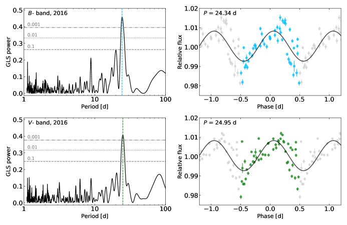
 و
و من موسم الرصد 2016. تشير الخطوط الأفقية إلى مستويات احتمال الإنذار الكاذب FAP = 0.1 و0.01 و0.001. اللوحات اليمنى: منحنيات ضوء مطوية على أفضل الفترات، كما هو مبين في المخططات. لُوئمت موجة جيبية لأفضل الفترات مع البيانات. ويُظهر اللونان الأزرق والأخضر دورة كاملة واحدة في مرشحي
من موسم الرصد 2016. تشير الخطوط الأفقية إلى مستويات احتمال الإنذار الكاذب FAP = 0.1 و0.01 و0.001. اللوحات اليمنى: منحنيات ضوء مطوية على أفضل الفترات، كما هو مبين في المخططات. لُوئمت موجة جيبية لأفضل الفترات مع البيانات. ويُظهر اللونان الأزرق والأخضر دورة كاملة واحدة في مرشحي  و
و ، على الترتيب.
، على الترتيب.Appendix B تحليل بيانات الليلتين الثانية والثالثة
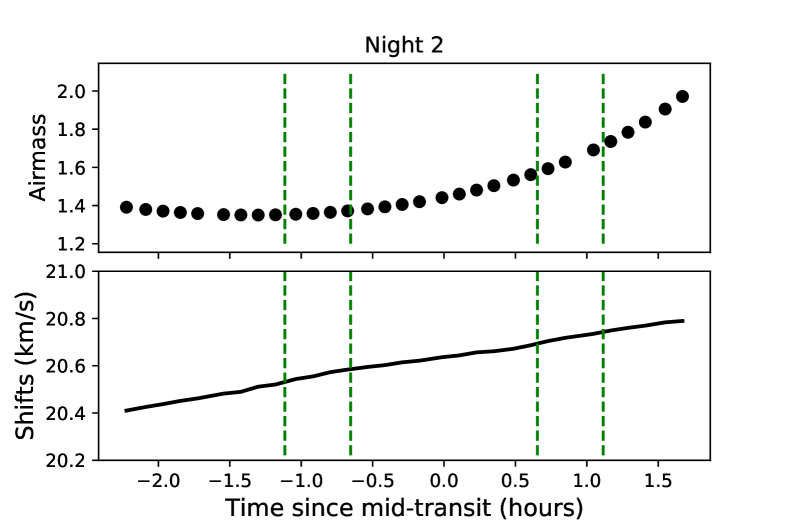
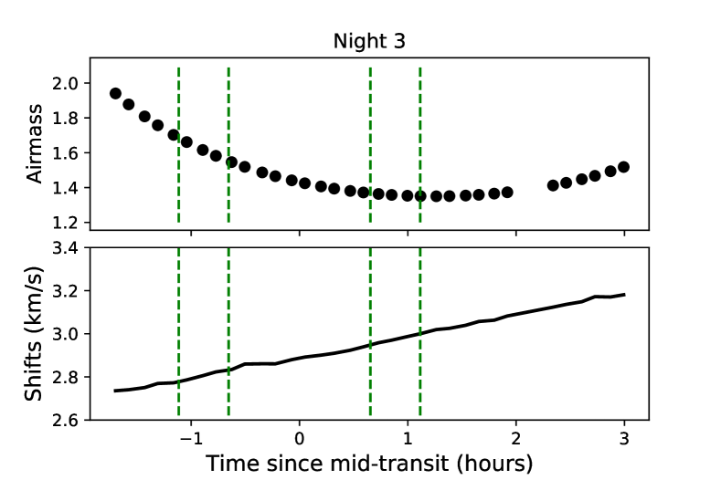
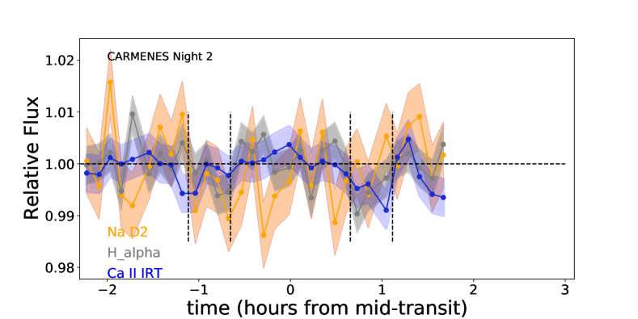
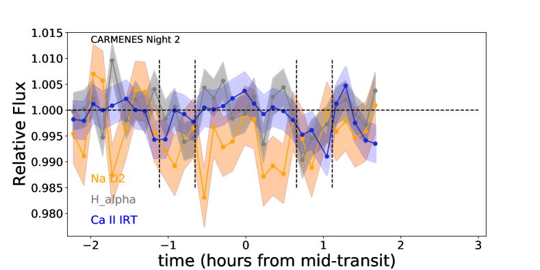
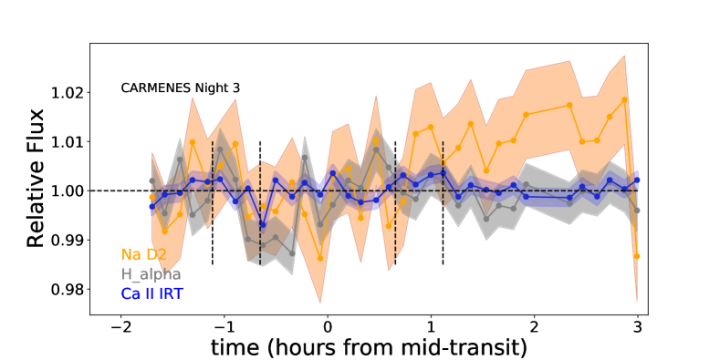
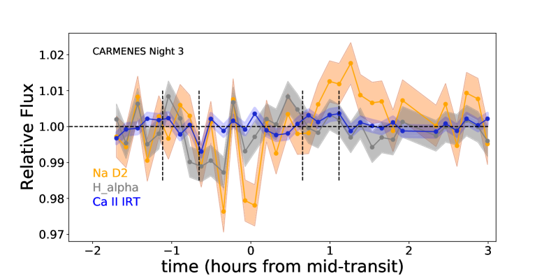
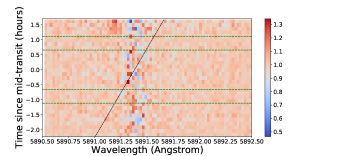
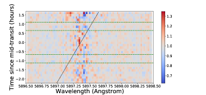
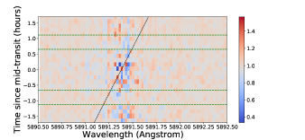
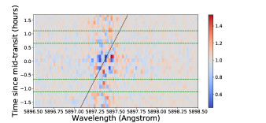
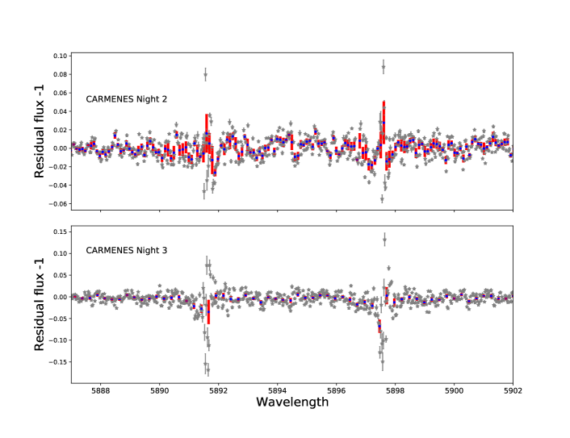
في تحليلنا الجوي، لم نأخذ في الحسبان بيانات الليلتين الثانية والثالثة من رصود CARMENES.
وكما ذُكر في القسم 2.1، فإن هذه الأطياف ملوثة بشدة بسمات الانبعاث التلوري في منطقة الصوديوم في الليلة الثانية، كما أن جودة البيانات وS/N غير كافيتين في القناة المرئية لكلتا الليلتين.
غير أننا، للمرجعية ولعرض النشاط الكروموسفيري النجمي في أنوية H وCa ii IRT، نعرض نتائج هاتين الليلتين في هذا القسم.
يعرض الشكل 14 الكتلة الهوائية والإزاحات الطيفية، والشكل 15 التطور الزمني لأنوية مؤشري النشاط H
وCa ii IRT، نعرض نتائج هاتين الليلتين في هذا القسم.
يعرض الشكل 14 الكتلة الهوائية والإزاحات الطيفية، والشكل 15 التطور الزمني لأنوية مؤشري النشاط H وCa ii IRT، والشكل 16 خرائط البواقي حول خطي الصوديوم D، وأخيرًا الشكل 17 طيف العبور حول سمات الصوديوم في كل ليلة. تُظهر خريطة البواقي (الشكل 16، اللوحات السفلى) وطيف العبور (الشكل 17، اللوحة السفلى) في الليلة الثالثة بعض البصمات المبدئية لامتصاص Na، وإن كانت بدلالة منخفضة بسبب التشتت الكبير نسبيًا لنقاط البيانات حول خطوط الصوديوم.
وCa ii IRT، والشكل 16 خرائط البواقي حول خطي الصوديوم D، وأخيرًا الشكل 17 طيف العبور حول سمات الصوديوم في كل ليلة. تُظهر خريطة البواقي (الشكل 16، اللوحات السفلى) وطيف العبور (الشكل 17، اللوحة السفلى) في الليلة الثالثة بعض البصمات المبدئية لامتصاص Na، وإن كانت بدلالة منخفضة بسبب التشتت الكبير نسبيًا لنقاط البيانات حول خطوط الصوديوم.
Appendix C النموذج الغاوسي المبسط
| Parameter | Symbol (unit) | Prior | Posterior | |
| Na i D1 | Na i D2 | |||
| Mean (center of Gaussian) | (Å) | 5891.38 0.01 | ||
| width | (Å) | 0.14 0.02 | 0.13 0.01 | |
| Amplitude (in relative flux) | A | –0.012 0.003 | –0.032 0.003 | |
| Offseta (in relative flux) | 0.001 0.000 | |||
| Wavelength difference between D1 and D2 | (Å) | fixed | 5.974 | |
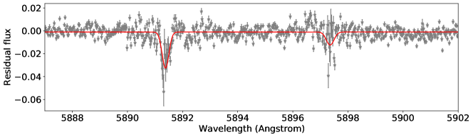
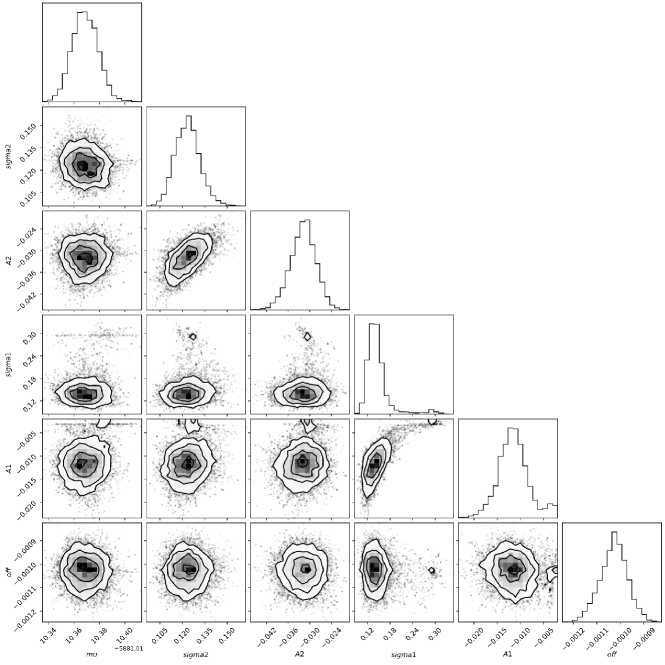
لقياس إشارة الامتصاص عند خطوط الصوديوم ومقارنتها بالعمل السابق، طبقنا نموذجًا غاوسيًا مبسطًا على أطياف العبور حول سمات الصوديوم. هذا النموذج تركيب من دالتين غاوسيتين، تتركز كل واحدة منهما على أحد خطي الصوديوم.
وبما أن هناك فرقًا ثابتًا في الطول الموجي بين أنوية كل خط Na D، فقد احتجنا إلى معلمة واحدة فقط لمواضع مراكز القمم الغاوسية ( ).
هنا، اخترنا مركزًا لخط D2.
استخدمنا 200 walkers، مع 1000 سلسلة لكل منها، حيث سُحبت المواضع الابتدائية من توزيع غاوسي حول أفضل تقديراتنا.
فرضنا أسبقيات منتظمة على جميع المعلمات الحرة.
سمحنا بمرحلة حرق مقدارها
).
هنا، اخترنا مركزًا لخط D2.
استخدمنا 200 walkers، مع 1000 سلسلة لكل منها، حيث سُحبت المواضع الابتدائية من توزيع غاوسي حول أفضل تقديراتنا.
فرضنا أسبقيات منتظمة على جميع المعلمات الحرة.
سمحنا بمرحلة حرق مقدارها  50 % من طول السلسلة الكلي، وبعدها تقارب MCMC.
ثم حُسب توزيع الاحتمال اللاحق من آخر 50 % من السلسلة.
تُعرض الأسبقيات وقيم المعلمات الأفضل ملاءمة ولايقينياتها في الجدول 4.
وتُعرض معلمات التوزيع اللاحق في الشكل 18.
50 % من طول السلسلة الكلي، وبعدها تقارب MCMC.
ثم حُسب توزيع الاحتمال اللاحق من آخر 50 % من السلسلة.
تُعرض الأسبقيات وقيم المعلمات الأفضل ملاءمة ولايقينياتها في الجدول 4.
وتُعرض معلمات التوزيع اللاحق في الشكل 18.